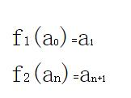

(2007-02-09 15:08:08)
在某级别的盘整中，或者说围绕某级别中枢的震荡、延续中，不存在转折的问题，除非站在次级别图形中，才有转折问题的探讨。【韶山映山红】盘整的延续可以分成两种情况：盘整中枢的延续，盘整走势类型的延续。出现第三类买卖点之前，都是盘整中枢的延伸。出现第三类买卖点之后，就是盘整走势类型的延伸，除非走成趋势，否则都是更大级别盘整中枢的形成过程，直到出现更大级别盘整中枢的第三类买卖点。这些运动归根结底都是“围绕某级别中枢的震荡、延续”。真正终结盘整走势类型延续的，实际上是次级别产生中枢移动的运动，然后演化为趋势。中枢移动并不是本级别的运动造成的，所以，在本级别，盘整不存在转折的问题。】
对于上涨的转折，有两种情况：下跌与盘整；对于下跌的转折，也有两种情况：上涨与盘整。【韶山映山红】趋势转折的完全分类包括：趋势+反趋势，趋势+盘整。】
转折是有级别的，【韶山映山红】转折的级别组合包括：本级别趋势+本级别反趋势，本级别趋势+高级别反趋势，本级别趋势+高级别盘整。没有本级别趋势+本级别盘整，因为这个本级别盘整要么成为趋势延伸，要么就是中枢扩张还没走完。】
关于转折与背驰的关系，有如下定理：【韶山映山红】分析趋势背驰引起的转折，所以是“转折与背驰的关系”，也就是说，不考虑小转大的情况。】
缠中说禅背驰-转折定理：某级别趋势的背驰将导致该趋势最后一个中枢的级别扩展、该级别更大级别的盘整或该级别以上级别的反趋势。【韶山映山红】这里说的是趋势背驰之后，根据反弹力度做分类的三种情况，并不是趋势背驰之后所有可能走势的完全分类】
该定理的证明有点抽象，估计大多数的人都没兴趣，那就用一个例子来说明，也大致知道证明的轮廓，更重要的是，这样，各位对走势的形成有一个更深切的认识。
例如，一个5分钟背驰段的下跌，最终通过1分钟以及1分钟以下级别的精确定位，最终可以找到背驰的精确点，其后就发生反弹。【韶山映山红】根据下文的举例，这里说的“一个5分钟背驰段的下跌”，不是30分钟趋势的5分钟背驰段，而应该是一个5分钟趋势的背驰段，所以区间套是1分钟以及1分钟以下级别。】
注意，反弹只是一般的术语，【韶山映山红】一般的术语，任何下跌之后的上涨都可以称为反弹。】
在本ID的理论中，对这反弹会有一个很明确的界定，就是包括三种情况：【韶山映山红】盘整没有本级别的方向，也就没有本级别的涨跌。所以，一般术语的任何下跌，到了缠论这里，就只有趋势下跌，缠论的反弹也就特指下跌趋势结束之后向上的走势。】
一、该趋势最后一个中枢的级别扩展、【韶山映山红】至少有一个同级别分解的向上盘整，使得下跌趋势的最后一个中枢完成扩张升级，形成高级别中枢。这个高级别中枢要么形成自己的三卖，然后继续下跌，要么继续扩展升级，否则还是不能成为走势类型的中枢，只是当下级别的中枢分析的中枢。】
二、该级别更大级别的盘整、【韶山映山红】不包含本级别的盘整。 如果只走出本级别盘整会怎么样？这个盘整之后只有三种可能：１，演化成本级别反趋势；２，扩展成更大级别盘整；３，继续原方向走势，要么是原趋势延伸，要么是原趋势最后一个中枢的扩展升级。 所以最终还是没有本级别盘整这个分类。】
三、该级别以上级别的反趋势。【韶山映山红】包含本级别的趋势和更高级别的趋势。其中，形成更高级别的趋势的情况，应该是先形成本级别反趋势，然后升级为高级别。如果是先形成更高级别的盘整，然后演化成趋势，从分类的角度看，就是第二种情况了。】
【韶山映山红】这是反弹的三种情况，不是转折的三种情况。第一种情况是反弹，但不是转折。那么对本级别来说，第一种情况算是什么样的走势演化呢？就是原来这个趋势（a+A+b+B+c）变成了更大级别的未完成的走势（a+A+b）+B~。未完成的意思是，也可能最终并没有变成更大级别的走势。】
一、该趋势最后一个中枢的级别扩展
对于5分钟级别趋势发生背驰的情况，那这个5分钟级别的趋势里所具有的中枢都是5分钟级别的，假设共有N个，显然，这个N>=2。
考虑最后一个中枢的情况，最后的背驰段，跌破该中枢后，该背驰段显然是一个1分钟以下级别的走势，否则就和该中枢是5分钟级别趋势的最后一个中枢的前提矛盾了。【韶山映山红】这里的“1分钟以下级别”也包括1分钟，背驰段是1分钟或1分钟以下级别。】
该背驰段出现第一类买点发生反弹，显然，该反弹一定触及最后一个中枢的DD=min(dn)，也就是围绕该中枢震荡的最低点，【韶山映山红】“该反弹”是指整个反弹，而不是特指第一段反弹。】否则，如果反弹连这都触及不了，就等于在下面又至少形成一个新的5分钟中枢，这与上中枢是最后一个矛盾。【韶山映山红】这里的语言习惯需要正确理解。触及最后一个中枢的DD的上涨才是缠论的反弹。】
【韶山映山红】如果确实发生了趋势背驰，然后反弹段还没有触及DD就转折，就会和第三类卖点前后的两段共同构成一个新的5分钟中枢，甚至和离开段一起形成线段类下跌趋势，所以说“等于在下面又至少形成一个新的5分钟中枢”，这都属于小级别延伸破坏大级别背驰的情况，原趋势延伸。这种情况既不是转折也不是反弹，不属于本课分析的范围。】
这种只触及最后一个中枢的DD=min(dn)的反弹，就是背弛后最弱的反弹，【韶山映山红】是背弛后最弱的反弹，不是背弛后最弱的走势。更糟糕的情况是不触及DD，就在原趋势最后一个中枢的下面形成了新的中枢，变成原趋势延续，也就不能算是反弹了，所以这种只触及DD的就成了最弱的反弹。】这种反弹，将把最后一个中枢变成一个级别上的扩展，【韶山映山红】只触及DD不到ZD的反弹，实际上也在最后一个中枢的下面形成了新的5分钟中枢，只不过因为触及DD，满足了两个中枢扩张升级的条件，所以不看做是原趋势的延伸。但是这个扩张在反弹第一段的时候，还没有完成中枢级别上的扩展，所以说“将”。】例如，把5分钟的中枢扩展成30分钟甚至更大的中枢。【韶山映山红】没有回ZD，也就没有破坏原来的下跌趋势。所以只是扩张。】
前面说过，第一类买点是绝对安全的，即使是这样一种最低级别的反弹，也有足够的空间让买入获利，【韶山映山红】“绝对安全的”获利空间就是背驰点到DD点。所以107课说的反弹操作要在第一段反弹的时候卖出，然后在第二类买点再决定是否回补。】而且，一般这种情况出现得特别少，很特殊的情况，【韶山映山红】趋势的本级别背驰，却不破坏原来的趋势，这种情况的增加，也算是一种进步吧。任何套利方法的公开，都是一种自我灭绝。】但理论上，是要完全精确的，不能放过任何一种情况，【韶山映山红】不放过任何一种情况，才是完全分类。】如果不幸碰到这种情况，在资金利用率的要求下，当然是要找机会马上退出，否则就会浪费时间了。【韶山映山红】也就是说，第一段反弹回到ZD才是标准走势，凡是不符合标准的都有问题。等于是前世的本级别背驰，如果走出的是小转大的今生，即使还有美好的今生，也会浪费时间。】
注意，这种情况和盘整背驰中转化成第三类卖点的情况不同，那种情况下，反弹的级别一定比最后一个中枢低，【韶山映山红】“那种情况”是指“盘整背驰中转化成第三类卖点的情况”，相对应的反弹是指a+A盘整背驰点反抽到第三类卖点的这一小段走势，是中枢的次级别走势，所以“级别一定比最后一个中枢低”。】而这种情况，反弹的级别一定等于或大于最后一个中枢的。【韶山映山红】“这种情况”是指“只触及最后一个中枢的DD=min(dn)的反弹”的情况。趋势背驰的反弹至少包含三段次级别走势，构成回升中枢，和前面的走势类型属于同一个级别。】因此，这两种情况，不难区分。【韶山映山红】两种情况，一个是a+A盘整背驰，一个是a+A+b+B+c趋势背驰。如果是a+A+b盘整背驰之后的反弹呢？和趋势背驰相比，除了一段反弹、三段反弹的区别之外，还有什么区别？★可以做个专题，以后研究。】
【韶山映山红】缠师为什么拿a+A盘整背驰的反弹，跟a+A+b+B+c趋势背驰的反弹去做比较？因为，虽然从当下的形态上看，a+A+b盘整背驰和a+A+b+B+c趋势背驰更一致，但是，从动力学的角度看，a+A盘整背驰的反弹，和a+A+b+B+c趋势背驰的反弹，都有一个当下的必然性，而a+A+b盘整背驰就没有了。或者更准确的说，a+A+b盘整背驰之后的次级别走势，虽然有反弹的必然，却没有目标可言，在操作上不足为凭。】
二、该级别更大级别的盘整、【韶山映山红】不包括该级别。】
三、该级别以上级别的反趋势。【韶山映山红】包括该级别。】
这二种情况就是发生转折的两种情况，原理是一样的，只是相应的力度有区别。【韶山映山红】什么原理是一样的？这里的逻辑是一样的，就是，前走势被破坏，所以算发生转折，就会开始另一个新的走势。除非这个破坏又被否定。】
当反弹至少要重新触及最后一个中枢，【韶山映山红】触及中枢区间[ZD，ZG]。】这样，将发生转折，【韶山映山红】反弹回到最后一个中枢的时候，还不算转折，而是“将发生转折”。因为新的走势类型还只有一段，也还没有形成中枢。只是因为原趋势已经被破坏，所以当下判断将发生转折。】也就是出现盘整与上涨两种情况，【韶山映山红】下跌趋势结束，转折，就只有盘整和上涨趋势可选。】对于上面5分钟下跌的例子，就意味着，将出现5分钟级别更大的盘整或5分钟级别以上的上涨，【韶山映山红】注意这里的语言习惯。“5分钟级别更大的”不包括5分钟级别，“5分钟级别以上的”反而包括5分钟级别。】两段走势类型的连接，就有两种情况出现：下跌+盘整，或者下跌+上涨。【韶山映山红】这两种情况的下跌都还独立存在，第一种情况的下跌被新走势融合了。】
注意，这里的盘整的中枢级别一定大于下跌中的中枢级别，否则就和下跌的延伸或第一种该趋势最后一个中枢的级别扩展搞混了。【韶山映山红】“下跌的延伸”是指下跌趋势在本级别趋势背驰之后，在B中枢的下面形成新的中枢，并且震荡区间与B中枢没有重叠，从而原趋势延伸。也就是说，本级别背驰之后的同级别盘整没有回到B中枢的DD。 “该趋势最后一个中枢的级别扩展”是指下跌趋势在本级别趋势背驰之后，反弹的同级别盘整和B中枢有重叠，从而形成B中枢的扩展升级。 前面说的反弹不触及DD，就在原趋势最后一个中枢的下面形成了新的中枢，变成原趋势延续；反弹只触及DD不到ZD，实际上也在最后一个中枢的下面形成了新的5分钟中枢，只不过因为触及DD，满足了两个中枢扩张升级的条件，所以不看做是原趋势的延伸，而是最后一个中枢的扩展升级。 前面说的是三段反弹的划分，这里说的是新的走势类型形成中枢之后的划分。如果这个盘整中枢的级别，和下跌趋势的级别一样，就会混同于“下跌的延伸”或者“该趋势最后一个中枢的级别扩展”。也就是说，三段反弹和形成中枢之后的新的走势类型两种情况，这时候还没有本质上的区别。真正要区别开，还需要这个本级别盘整再走几步，形成本级别趋势，或者更大级别盘整。 和下跌的延伸有可能搞混了，也就是说，趋势背驰之后还有可能趋势延伸，不要把趋势延伸也划分出盘整来。趋势延伸就是小级别延伸破坏大级别背驰，而不是一个盘整中继之后的继续下跌。】
而上涨的中枢，不一定大于上跌【韶山映山红】笔误，是“下跌”。】中的中枢，例如，一个5分钟级别的下跌后反过来是一个5分钟级别的上涨，这是很正常的，但如果是盘整，那就至少是30分钟级别的。【韶山映山红】这里完全明确了盘整级别大于趋势。】
有人总是搞不明白为什么“下跌+盘整”中盘整的中枢级别一定大于下跌中的中枢，这里不妨用一个例子说明一下：【韶山映山红】在非同级别分解的情况下，任何的“趋势+盘整”中的盘整的级别都要大于趋势中的级别。】
例如，还是一个5分钟的下跌，那至少有两个中枢，整个下跌，最一般的情况就是a+A+b+B+c，其中的a\b\c，其级别最多就是1分钟级别的，甚至最极端的情况，可以就是一个缺口。而A、B，由于是5分钟级别的中枢，那至少由3段1分钟的走势类型构成，如果都按1分钟级别的走势类型来计量，而且不妨假设a\b\c都是1分钟的走势类型，【韶山映山红】连接段不做同级别分解就都是1个走势类型。】那么a+A+b+B+c就有9个1分钟的走势类型。【韶山映山红】如果连接段都视为次级别，两中枢趋势就最少也要9个次级别。】
而一个30分钟的盘整，至少有3个5分钟的走势类型，而1个5分钟的走势类型，至少有3个1分钟的走势类型，也就是一个30分钟的盘整，就至少有9个1分钟的走势类型，这和上面a+A+b+B+c的数量是一致的。【韶山映山红】最简单的盘整只有中枢，没有连接段。】
【韶山映山红】不知道缠师为什么搬出这么一套说辞来。30分钟盘整和5分钟趋势都要9个1分钟走势，证明两种走势的级别相当，这没问题。问题是，为什么一定要这样匹配呢？★以后研究。】
从这数量平衡的角度，就知道为什么“下跌+盘整”中盘整的级别一定比下跌的级别大了，如果级别一样，例如一个5分钟的盘整，只有3个1分钟的走势类型，那和9就差远了，也不匹配。【韶山映山红】构成转折的两个走势类型，即使级别不同，也应该折腾的程度相同，这样才可以视为门当户对的相同地位。否则其中的一个就只是连接段。★可以做个专题。以后研究。】
【韶山映山红】从次级别的个数来看，最简单的趋势和最简单的盘整“数量平衡”。但是趋势和盘整的级别不一样。为什么有这种平衡？★可以做个专题。以后研究。】
【韶山映山红】趋势之后的盘整，对趋势来说，是一种阻止，或者是刹车。盘整所代表的能量对等，才能刹住趋势的车？盘整之后的趋势是否也有对等的能量，才能释放盘整所集聚的能量？★缠论与能量守恒，可以做个专题。以后研究。】
【韶山映山红】数量平衡的是次级别的个数。也就是说，每一个次级别走势类型都被视为相同的东西。次级别可能是趋势，也可能是盘整，如果是盘整，就只是同级别分解拆分的盘整，而不是比趋势级别高的独立的盘整。也就是说，这个视为相同的东西，没有数量平衡的考虑。】
当然，“下跌+盘整”中盘整的级别一定比下跌的级别大，最主要的原因还不是这个，而是上面说到的，如果该级别一样，那只有两种情况，下跌延伸或下跌最后一个中枢扩展，和“下跌+盘整”是不搭界的。【韶山映山红】如果趋势背驰之后，只走出了一个同级别盘整，也就意味着后面的走势肯定是继续下跌，“那只有两种情况，下跌延伸或下跌最后一个中枢扩展，”从另一个角度看，如果做同级别划分，还原走势的本来面目，就是同级别的下跌+盘整。】
有人可能还有疑问，如果下跌最后一个中枢扩展，例如5分钟扩展成30分钟，那和5分钟级别下跌+30分钟级别盘整有什么区别？【韶山映山红】5分钟a+A+b+B+c演化成30分钟（a+A+b）+B~+b，或者30分钟（a+A+b+B+c）+D+d。】
这区别大了，【韶山映山红】这里的关键问题是，前面的下跌趋势的最后一个中枢算是哪一部分的。】因为在“5分钟级别下跌+30分钟级别盘整”，也就是“下跌+盘整”中，下跌和盘整都是完成的走势类型，这意味着是两个走势类型的连接。【韶山映山红】这句话的意思是说，下跌走势已经完成了，下跌趋势的最后一个中枢属于前面的下跌趋势，不包含在后面的盘整中。背驰点是两个走势的分界点。 从另一个角度看，盘整也是完成的走势类型，也就意味着不管后续的走势怎么演化，都不会否定这个盘整的存在了。也就是说，这个（a+A+b+B+c）+D+d的30分钟中枢D已经出现第三类买卖点。】而下跌最后一个中枢扩展，是一个未完成的走势类型的延续，还在一个走势类型里。【韶山映山红】这句话的意思是说，下跌走势的最后一个中枢成为了扩展中枢的一部分，背驰后的反弹走出的中枢和下跌走势的最后一个中枢都成为扩展中枢的一部分。而扩展升级的高级别新中枢之后，还不能确定未来的走势。也可以说，这是原方向走势的升级，方向不变，否则走势的划分还要重新调整。】
例如，在上面的a+A+b+B+c里，如果B+c发生中枢扩展，从5分钟扩展成30分钟的，那么a+A+b就是一个5分钟的走势类型，把a+A+b用a~表示，而B+c发生中枢扩展用A~表示，那么整个走势就表示成a~+A~，【韶山映山红】中枢扩张的情况走到这里就算是告一段落了，后面怎么走，又面临新的判断，可以像下面一句说的演化成30分钟级别的下跌，也可能扩张成30分钟级别的中枢之后又上涨，也可能继续扩展出更大级别的盘整。这个A~中枢实际上就是中枢级别的中阴中枢。】其后的走势还可以继续演化，形成a~+A~+b~+B~+c~，也就是扩展成一个30分钟级别的下跌，【韶山映山红】扩展成一个30分钟级别的下跌，是当下最常规的判别。所以这种情况划分为反弹，而不是转折。】当然还可以有其他的演化，总之，是必须把走势类型给完成了，【韶山映山红】在这个中枢的第三类买卖点出现以前，都是中阴阶段。】这和“下跌+盘整”的情况显然是不同的。【韶山映山红】在上面的a+A+b+B+c里，如果是“下跌+盘整”，整个走势就表示成（a+A+b+B+c）+[D~]。】
本ID的理论是最市场走势最精确的分析，必须把所有情况以及其分辨了然于胸，才可能对市场的走势有一个精确的把握。【韶山映山红】完全分类，既要完全无遗漏，也要清楚分类的界限。】
如果本ID把这套理论出版，书名就可以是《市场哲学的数学原理》，因为本ID的理论的严密性以及对市场的意义 ，一点不比牛顿对物理的意义差，这一点，是必须逐步明确认识的。【韶山映山红】现在回过头来看历史，缠师的这套理论有两种可能：一是已经有成型的理论，只是没有公开出版，缠师在博客课程里一点一点透露给我们。总感觉不是这样的，缠论的前后几部分的延续性太差。还一种可能就是只存在于缠师的头脑里，经验层次的成分更多，还没有梳理成型、上升到理论程度，缠师在博客写课程的过程就是一个梳理成型的过程，所以最早是均线系统和定性分析的中枢，然后是中枢、走势都公式化，再然后是分型、笔、线段改造初始化函数，这些都是一个从模糊到精确的过程，越往后的课程越像数学原理，所以我们看到了缠论这样的一个进化过程。可惜缠师没有完成整个缠论的披露或者梳理就离开了。】
而且，本ID这套理论，是建立在纯数学的推理上的，完全没有发生爱因斯坦对牛顿颠覆等类似无聊事情的可能。【韶山映山红】缠师是说，缠论不会被颠覆。】不了解这一点，是不可能真正理解本ID理论的，因此就会“学如不及，犹恐失之”。【韶山映山红】真正理解了，就会成为一种信仰，也就没有了“犹恐”。】
【韶山映山红】牛顿《自然哲学的数学原理》。】
以上三种情况，就完全分类了某级别背驰后的级别与力度，也就是某级别的第一类买点后将发生怎么样的情况，而第一类卖点的情况是一样的，只是方向相反。【韶山映山红】课文标题是“转折的力度与级别”，这一段话丢掉了“转折的”，被众人所理解的意思就完全不同了，以至于误导了大部分人。 换句话说，不符合这三种情况的又算是什么呢？★都属于小级别延伸破坏大级别背驰。第一段反弹不能返回前低的，c从线段类盘整演化成线段类趋势，属于次次级别的小级别延伸。第一段反弹能够返回前低、不能返回B中枢DD的，c从线段类盘整演化成升级的中枢类盘整，属于次级别的小级别延伸。第一段反弹能够返回B中枢DD的，B中枢演化升级，也就是前趋势升级了。第一段反弹能够返回B中枢ZD的，才是前趋势的走势类型被破坏。】
注意，这里说的是最精确的情况，由于第一种情况很少发生且和第二种情况有所类似，所以粗糙地说，也可以说背驰以后就意味着盘整和反趋势。【韶山映山红】除了同级别的“趋势+反趋势”之外，其他两种情况都是升级到更高级别，一个是（a+A+b）+（B~），一个是（a+A+b+B+c）+（C~），所以扩张和盘整两种情况的后续的分析可以类似。】
那么，怎么分别这几种情况，关键就是看反弹中第1个前趋势最后一个中枢级别的次级别走势（例如前面的下跌是5分钟级别，就看1分钟级别的第1次反弹），是否重新回抽最后一个中枢里，【韶山映山红】做判断的依据是反弹的“第1个”“次级别走势”，而不是整个反弹。“回抽最后一个中枢里”是回抽ZD。】如果不能，那第一种情况的可能就很大了，【韶山映山红】为什么这里又说“可能就很大了”，而不是一定？★因为这个反弹段刚走完的时候，不能规定后面怎么走，还要看市场的选择。比如，如果市场又选择振荡之后一飞冲天，我们也不能说不许。最终，一切以市场的实际走势为准。】而且也证明反弹的力度值得怀疑，【韶山映山红】反弹不进中枢，就意味着原趋势还没有被破坏，新走势还不能展开，所以对反弹的力度投不信任票。】当然这种判别不是绝对的，但有效性很大。【韶山映山红】这里说的“判别”实际上是一种提前的预判，根据反弹的第一段的走势预判未来，所以“不是绝对的，但有效性很大。”这段话也说明，“是否重新回抽最后一个中枢里”并不是严格的判断依据，只是判断的参考。】
例如，这次2007.02.06.的反弹，用5分钟背驰段，【韶山映山红】5分钟中枢的背驰段。】
然后考察1分钟以及1分钟以下级别的背驰进行精确定位，【韶山映山红】5分钟中枢的1分钟离开。】
可以极为精确地把握这个底部，【韶山映山红】这个时候还没有笔、线段的概念，上图的笔、线段和当时的走势分析非常的不匹配。】而且在实践中，很多人按照本ID的理论都把握住了，【韶山映山红】这时候还没有要求趋势背驰的背驰段要有第三类买卖点。】
【韶山映山红】这里在笔线段时代是1分钟的下跌趋势，底部盘整背驰引起线段级上涨。】
那么，其后的反弹，第一波是1分钟走势马上回到从2980开始的5分钟下跌的最后一个中枢里，这样就意味着第一种最弱的情况可能性可以完全排除了，【韶山映山红】这里说回到“最后一个中枢里”，是指中枢区间[ZD，ZG]。“第一种最弱的情况”就是“最后一个中枢的级别扩展”，第一反弹段回到中枢区间，意味着下跌趋势已经被破坏，整个反弹回到中枢区间的任务提前完成，后面的走势将更有可能是反趋势或更大级别的盘整。】
【韶山映山红】按后期的笔线段中枢，这里反弹第一段只是回到了中枢的震荡区间，三段反弹超越了中枢。】
其后，1分钟的走势继续完成，扩展成一个5分钟的上涨，【韶山映山红】形成下跌+上涨的转折。】在2007.02.07.的11点前后，一个1分钟的背驰制造了上涨的结束，【韶山映山红】这里的“5分钟的上涨”更像是线段类上涨趋势。】
【韶山映山红】这个5分钟的上涨在笔线段时代只是一个线段类盘整向上。】

其后进入一个中枢的震荡中，这个中枢，按照本章的定理，就可以断言，至少是5分钟级别的，【韶山映山红】此时的当下，要么形成5分钟中枢，原来5分钟的上涨趋势延续，要么形成30分钟盘整。】而实际上演化成一个30分钟级别的，这意味着，一个快速的5分钟上涨的可能就没有了，【韶山映山红】5分钟上涨趋势虽然没有背驰，但最后一个中枢的延伸升级也是对趋势的一种破坏。】后面只有两种演化的可能，就是一个30分钟以上级别的盘整，或者是一个30分钟以上的上涨，至于哪种情况，就必须看后面走势的演化。【韶山映山红】还没有出现第三类买卖点，此时的当下还不足以判断30分钟中枢是盘整走势类型，还是趋势的第一个中枢。】
【韶山映山红】这个30分钟的中枢，在笔线段时代是线段中枢延伸升级为5分钟中枢。】
而对于实际的操作，这两种情况并没有多大的区别，【韶山映山红】“这两种情况”是指“后面只有两种演化的可能，就是一个30分钟以上级别的盘整，或者是一个30分钟以上的上涨，”】例如是盘整还是上涨，关键看突破第一个中枢后是否形成第三类买点，【韶山映山红】缠论进化到这里的时候，三买点意味着继续上涨，所以三买点承担了区分盘整和趋势的任务。实际上判断趋势的不是第三类买卖点，而是非背驰离开。】而操作中，是在第一、二类买点先买了，然后观察第三类买点是否出现，出现就继续持有，否则就可以抛出，因此在操作上，不会造成任何困难。【韶山映山红】这里的问题是，观察第三类买点是否出现，一直等到什么时候为止。只要不出三卖，就一直可以继续观察第三类买点是否出现，所以这里的“否则就可以抛出”实际上并不是说没出三买就抛出，而是说的出三卖就抛出。】
当然，如果是资金量特别小，或者对本ID的理论达到小学毕业水平，【韶山映山红】“精通分辨盘整背驰与背驰，躲过盘整背驰转化为第三类买卖点的是小学毕业。”】那么完全可以在突破的次级别走势背驰时先出掉，然后看回试是否形成第三类买点，形成就回补，不形成就不回补，就这么简单。【韶山映山红】任何一次“突破的次级别走势背驰时”都要先出掉，回试不形成第三类买点，就是跌回中枢，继续中枢延伸震荡，也就是说，不参与中枢震荡的过程。同时，不形成三买就不回补，说明也不参与中枢震荡的降级操作。 “突破的次级别走势背驰”是每一次离开段都假定为背驰段，做a+A盘整背驰判断。】
当然，要达到这种境界，首先要对本ID的理论小学毕业，否则，你根本分辨不清楚盘整背驰与第三类买点的转化关系，怎么可能操作？【韶山映山红】盘整背驰与第三类买点的转化关系：当下的离开段对前一个离开段是否有abc盘整背驰，是形成第三类买卖点的判断依据。】而且，这种操作，必须反复看图、实际操作才可能精通、熟练的。【韶山映山红】当下的判断只能指挥操作，不能指挥走势。所以实际操作需要精通、熟练的不只是规则的运用。】当然，如果真精通、熟练了，除了同样是本ID小学已经毕业的人，几乎没有人是你的对手了。【韶山映山红】“学习本ID理论的学历标准： 精通找出各级别中枢的，是幼儿圆毕业。精通分别中枢的新生、延伸、扩展的，是学前班毕业。精通分辨盘整背驰与背驰，躲过盘整背驰转化为第三类买卖点的是小学毕业。”】
那么，实际操作中，怎么才能达到效率最高。【韶山映山红】这里说的是“效率最高”，也就是只做趋势背驰之后的第一段反弹。】
一个可被理论保证的方法就是：在第一次抄底时，最好就是买那些当下位置离最后一个中枢的DD=min(dn)幅度最大的，所谓的超跌，应该以此为标准。【韶山映山红】缠论的超跌是幅度的考察。】
因为本章的定理保证了，反弹一定达到DD=min(dn)之上，【韶山映山红】在一买抄底。努力选超跌的。跌幅也是“效率最高”的源泉。】超跌也可能涨不起来，盈亏同源。】幅度大，还依然满足趋势背驰的要求，意味着下跌趋势的级别够大，所驰骋的空间幅度大。】
然后在反弹的第1波次级别背驰后出掉，【韶山映山红】这里“次级别背驰”是第一段反弹自己的内部背驰。】
如果这个位置还不能达到最后一个中枢，那么这个股票可以基本不考虑，【韶山映山红】这句话证明，“被理论保证的”必回DD，也是相对的，不是绝对的。从完全分类的角度看，只是其中的一种形态。】
当然，这可能有例外，但可能性很小。【韶山映山红】这里说的“例外”是指反弹没有回到最后一个中枢、却慢慢走出大的上涨走势。趋势背驰却走出小转大的风格，可能性很少。】也可能在低位压着吸筹、洗盘。】能力够高的，就要等底部构建失败才放弃。】
然后在反弹的第一次次级别回试后买入那些反弹能达到最后一个中枢的股票而且最好是突破该中枢的而且回试后能站稳的，【韶山映山红】这里买入的是“那些反弹能达到最后一个中枢的股票”，而不是前面说的“反弹一定达到DD=min(dn)之上”的。也就是说，达到DD还是被嫌弃，达到ZD才行。 比“反弹能达到最后一个中枢”更好的就是“突破该中枢的而且回试后能站稳”，也就是二买在前下跌趋势最后一个中枢之上。这里“突破该中枢”是指前下跌趋势的最后一个中枢B，“回试后能站稳的”就是不再跌回B中枢ZG。很多人把这种情况视为二三买重合，这是有争议的，因为趋势背驰的第一类卖点要求先要有B中枢的三卖构成背驰段，B中枢有了三卖之后，还能不能再有三买，就是个问题了。缠师并没有说这里是二三买重合，也可能是因为，这种形态比一般的二三买重合更强势，而二三买重合只是针对次级别转折的情况。这样就可以对二买的介入划两条界线：B中枢的ZG，B中枢的三卖。】
根据走势必完美，一定还有一个次级别的向上走势类型，【韶山映山红】趋势背驰的本级别反弹至少有三段次级别反弹。】
如果这走势类型出现盘整背驰，那就要出掉，【韶山映山红】这里表明三段反弹也算是一个“走势类型”。三段反弹形成abc盘整背驰，当下这个线段类盘整走势就结束了，正常的走势演化，至少会回跌形成原下跌趋势同样级别的新走势的第一个中枢。这个时候并不能预判转折，为什么要出掉？只做中枢次级别的V型反转？连中枢级别的V型反转都不放在眼里？★可以做个专题，以后研究。】
如果不出现，那就要恭喜你了，你买到了一个所谓V型反转的股票，其后的力度当然不会小。【韶山映山红】再向上的反抽不盘整背驰，意味着实际上已经走出了次级别的线段类趋势上涨，而且在B中枢之上的位置，新走势的第一个中枢也就在B中枢之上了，趋势+反趋势的转折已现雏形。也就是说，这里的“所谓V型反转”是下跌趋势+上涨趋势，其判断依据是下跌趋势背驰+次级别线段类趋势上涨，且新走势的第一个中枢高于原趋势的最后一个中枢。】
至于如何预先判断V型反转，这就不是本章定理可以解决的问题，必须在以后的课程里才能解决。【韶山映山红】“如何预先判断V型反转”？★可以做个专题。以后研究。】
【韶山映山红】趋势背驰之后的震荡，如果在原趋势的最后一个中枢范围内，就是“健康"的，就会继续震荡下去，而不会形成“V型反转”。如果震荡脱离了原趋势的最后一个中枢范围，到了第二第三中枢，就“不健康”了，就会形成“V型反转”。这个健康不健康，就是判断标准。】
【韶山映山红】29课。a+A+b+B+c趋势背驰之后走势的完全分类与一步一动。
虽然可以根据原文的三种情况去划分，但实际上，缠论的宗旨是不预测，所以前三段都是中阴阶段，不能有明确的走势类型划分。能做的是B中枢的扩张分析。
１，第一段反弹。
这段反弹可以作为趋势背驰的结构力的标志，所以拿来作为分类的依据。除了转折、反弹两种情况之外，完全分类，实际上有四种情况：
①回到ZD以上。完全符合标准。下跌趋势被破坏，当下判断新走势形成。
②回到DD，不到ZD。下跌趋势还没有被破坏，形成了C中枢，震荡区间与B中枢重叠，当下判断Ｂ中枢扩张，形成a~+A走势，最终判断要等升级中枢的第三类买卖点。
③回到c1低点，不到DD。下跌趋势没有被破坏，形成了C中枢，震荡区间与B中枢没有重叠，原下跌趋势延伸。除非继续震荡，震荡区间与B中枢重叠，否则，最终判断要等C中枢的第三类买卖点。
④没回c1低点。悲剧了，反弹与c构成了线段类下跌趋势，小级别延伸破坏大级别背驰。即使后面走出不新低的二买的结构，可能后续有上涨的行情，也等新走势第一个中枢的三买再看吧。
２，第二段反弹。实际上是向下走势。如果比背驰点更低，必须对最后背驰点有线段类盘整背驰，否则就是小级别延伸破坏大级别背驰。新低盘背或者不新低就还是算形成二买，虽然很膈应。
３，第三段反弹。不管第一段反弹走到什么位置，如果第三段反弹不新高，就成了二卖，有可能构成新走势类型的第一个中枢，也可能是三段反弹的盘整走势类型的结束。这时候应该出来观望，等新走势类型的第一个中枢的第三类买点再进场。舍不得机会的可以降低级别做次级别的操作，同时等第三类买卖点来选择方向。
【韶山映山红】29课。a+A+b+B+c趋势背驰。三种情况的力度分析，为什么以DD、ZD为标志？
标准情况下，B2对b，线段类盘整背驰，所以有B3的反弹形成中枢。（其他形成B中枢的动力分析还没有做，暂时不管。）
c1对b，中枢离开段盘整背驰，c2返回力度不足，形成三卖。
c3后，c对b有中枢盘整背驰，c3对c1有线段类盘整背驰。
所以，反弹开始，几个关键判断点位。
1，回到c1低点，意味着只完成了c3对c1的线段类盘整背驰的任务。
2，回到c3高点，意味着次级别一段的V型反转，反弹力度只和c3相当。
3，回到B2低点，也就是DD点，完成了c1没有完成的任务，也就是说，返回力度相当于c3和c1两段下跌。意味着次级别c段的V型反转。
4，回到b低点，也就是ZD点，回到形成中枢的起点，也就是说，返回力度相当于c3、c1和B2三段下跌。这样的力度，才能够与形成B中枢的下跌力度相当，才有转折的能力。
29课，a+A+b+B+c趋势背驰。
第二种情况，走出更大级别盘整，然后的下跌段，比较力度的对象是a+A+b+B+c。能够返回ZD，说明反弹力度很大，想继续下跌，比较力度的对象是a+A+b+B+c，想形成非背驰下跌的难度就更大了。
第一种情况，B中枢扩张升级，然后的下跌段，比较力度的对象是a+A+b。只能返回DD，说明反弹力度差点意思，想继续下跌，比较力度的对象只是a+A+b，想形成非背驰下跌就容易一点。
【韶山映山红】学了中阴阶段的内容之后，回过头来复习29课，如何用中阴阶段的分析方法做趋势背驰之后的划分？
a+A+b+B+c趋势背驰，最后5段走势有两种可能：线段类趋势，a+A盘整。
１，最后5段走势是线段类趋势。趋势背驰之后，进入线段级别的中阴阶段。中阴中枢由c2、c3和反弹段构成。
当新走势的二买高于B中枢三卖的时候，返回三段直接构成c1c2c3三段中枢的三买，二三买重叠，没有中阴中枢的三买，线段级别的中阴阶段直接结束。
当新走势的二买跌破B中枢三卖的时候，才有中阴中枢的形成。然后要等第三类买卖点选择方向，如果新走势的二买直接跌破中阴中枢然后形成中阴中枢的三卖，a+A+b+B+c趋势背驰就被小级别延伸破坏掉了。这时候新走势的二买不一定跌破背驰点，还要在次级别做具体的分析判断。
离开段开始的新走势的5段走势也分两种情况：线段类趋势，a+A盘整。中阴中枢出三买，并不能保证离开段开始的5段走势是线段类趋势。
中阴中枢出三买，线段级中阴阶段结束，即使新走势5段没有形成线段类趋势转折，也可以等新走势的a+A盘整选择方向。
２，最后5段走势是a+A盘整。趋势背驰的时候，不一定有a+A盘整背驰。趋势背驰之后，也没有线段级别的中阴阶段。未完待续。可以做个专题，以后研究。
当新走势的二买构成这个中枢三买的时候，二三买重叠，也算是次级别的转折确认。
当新走势的二买构成这个中枢的延伸震荡，那就等这个中枢出第三类买卖点。
当新走势的第一段反弹构成这个中枢的三卖的时候，就是小级别延伸破坏大级别背驰了。
】
【韶山映山红】
a+A+b+B+c趋势背驰之后，走势演化的完全分类：
技巧：什么是完全分类？最简单明了的完全分类就是非此即彼。
B中枢升级or不升级。非此即彼。
B中枢不升级，走势就要离开B中枢的区域。
只有两个离开的方向，向上or向下。非此即彼。
向上，本级别或更大级别趋势。
向下，本级别延伸了。
B中枢升级，升级后的中枢是否包含B中枢？包含or不包含。非此即彼。
包含，B中枢扩张升级。
不包含，更大级别的盘整。
【网文】为什么缠中说禅说到MACD的趋势背驰一定回到前面的中枢里？
为什么缠中说禅说到MACD的趋势背驰其回跌一定至少重新回到前面的中枢里？为什么不可能回到回跌点到中枢位置1/2,2/3……？而是一定重新回跌到前面中枢？能否详细解答？这个论点是正确的吗？

好利害，好多人都说明白了，沾个光，给你们配个图。
缠把从中枢破底下行后，再次上抽的走势做了个完全分类，然后Ta把事情分成两类，一类是可以回到中枢的，一类是不能回到中枢的，不能回中枢的那一类，就是原趋势的延续，回中枢的那一类，就是这个背驰转折定理。但是如果你眼中死盯着“背驰回中枢”这一点，会死得很难看，因为这不是整个分类的全部。背驰转折定理要解决的问题是，回中枢的那些走势的分类情况。它并不是用来保障一个走势一定要回中枢。
这个图也是这个定理的数学证明了。
图看不清 能发个清晰的么
贵乎有点抽风了，它不显示大图了。这是它存大图的地方：https://pic2.zhimg.com/2c098991d949953d0d821b8de42c2771_r.png
这个定理只是说明了情况，用处不一定大。缠是把回抽后所有可能的情况都列出来，然后把其中达到某一标准的一组情况定义为“背驰转折”，达不到那个标准的，归类为另外一种定义，用另外的方法去处理。
【网文】标准背驰（标准下跌形态）
近日上证指数30分钟图上 2018-09-26 14:00 开始，出现了一段标准的，纯净的无瑕背驰，爱不释手。
在60分钟的图上，它是这样的：
在五分钟的图上它是这样子的：
五分钟图上，分别这三段，又在5分钟的图上显现出背驰：
第一段：
第二段：
第三段：
这也是一段标准下跌形态了。
【2018-11-18】：记号。
编辑于 2018-11-18
今天大盘没什么可说的，就是围绕一直强调的2720点震荡。【韶山映山红】“一个大的阻力就是2720，这是上次的低点，”下面5分钟图，2720就是前面2007-01-26那个低点。】
有经验的人一看，就应该知道这个中枢是一个三角形，今天尾盘的杀跌是其第5段。
三角形形成后就必然面临突破，而且这时间就在下周初，方向也简单，就是看2720站稳还是站不稳，站不稳就2次探底，【韶山映山红】站不稳就是出现三卖，“就2次探底”。】否则就再来1波。【韶山映山红】站稳就是出现三买，“就再来1波”。】至于是否站稳，看看短线指标就很容易判断。【韶山映山红】看哪个“短线指标”？MA5？★以后研究。】

个股没什么说的，自己看图找吃，下周告诉大家，像999、777这种翻倍变负成本的，如何在坚持负成本下，筹码越来越多，这才是最牛的吸血方法，让所有庄家、基金闻风丧胆。
2007-2-9 15:09
各位等一下，版没排好。
等一下再回答问题，先排版。
2007-2-9 15:17
[匿名] 罗锅 2007-02-09 15:16:06
数学妹妹！小心中山狼呀！好心没好报的！别以为他们会真的感谢你！你看着吧！你说的理论很快就有剽窃说是他们自己的！然后还出书！别再说你的理论啦！别告诉他们股票！他们追高买了也会算在你头上的！他们都是坏人！自己挣钱就可以啦！亏死他们！把他们的血抽干！
==
本ID这里来去自由，干什么都可以，自便吧。
2007-2-9 15:33
各位注意了
既然大家这么兴奋，反正周五，大家可以充分发泄。本ID这里来去自由，想干什么都可以，但不能刷屏，这样对大家都不好。
如果大家都不愿意安静，那本ID只好晚点再来了。
2007-2-9 15:37
注意
本ID刚才把罗锅、以及xxxx几个有重复刷屏嫌疑的帖子给删了，本ID平时从来不删帖子，但刷屏的一定要删，只保留一个就可以了，这为了大家看起来舒服点。
2007-2-9 15:42
[匿名] longs 2007-02-09 15:09:50
老大现在喜欢抢楼么,呵呵
==
不是，这样要看每天大盘讲解的，可以看得到，否则一下就到后面，难找。
2007-2-9 15:44
小糊小舞 2007-02-09 15:09:59
楼主，现在看《论语》系列，写得很好，是有学问在里头。你在一开头就说，不能把握《论语》的整体思想的，很容易曲解它。你在清扫这些曲解的时候，对“字”的解释有很多篇幅，这种解释一方面清扫了那些曲解，一方面整体而又连贯地阐述《论语》，让人叹服。
我就有一个小问题了，楼主是先对古字下功夫后才研究《论语》，还是同时研究《论语》和古字的？这个问题有点象“鸡生蛋”的类型，但是感觉你是自己形成了一个对《论语》的整体感觉后，它里面的“字”就不太容易“迷惑”你了，反过来又进一步印证了你的整体感觉。这个过程两者是相辅相成的，但是总有哪一个是更早开始的吧？
很希望楼主能再写一个系列，就是怎么去学国学。。。能象现在的炒股系列一样，一步一步来，那就更好了。。。
还有就是，楼主你的《论语》详解什么时候能出版啊。。。现在觉得这个比股票更有意思，股票只能慢慢来了，心急也没用。
==
你的思想要高于论语，才可能注解论语，否则你自己还搞不懂，最多是对话，那怎么可能解释得好。字、句反而是最末的事情了。
【韶山映山红】同理，你的思想要高于缠论，才可能注解缠论，否则你自己还搞不懂，最多是对话，那怎么可能解释得好。所以，这里只是学习笔记。】
2007-2-9 15:47
[匿名] 听缠释禅 2007-02-09 15:46:39
来这里一段时间了,收获不小,谢谢"带头大姐".
当然,这里您的年龄肯定不是大姐,但学问是绝对够格的,并且是占排头的.偶知道您这类人都是"人精"一类的,人极聪明,所涉学问也很广泛.所谓有禅机的万事万物,都是绝大多数人难以悟明的诀窍,在这里听君释解万事"缠"绕之中的真谛和禅机,也是一种享受和炼化.这里很想知道您对"何新"的评价.
==
何，一个尚可的学者，但离真正的智者差太远，而且，即使站在学者的角度，也离贯通中西、高低皆应，差得太远。【韶山映山红】何新，1949年生，大学肄业的著名学者。涉猎众多人文社科经济领域，都饱受争议。89前后十年，基本上起到国士智囊作用，个人影响力发挥到极致。】
当然，他们那一代人，基础上就有缺陷，而有些东西是需要机缘的。
2007-2-9 15:53
[匿名] stone 2007-02-09 15:17:50
LZ能不能分析下600050联通的走势？
==
短线当然都是二、三线的天下，联通要大幅启动，必须有新的刺激，否则也就是一个中枢震荡。目前，中移动的回归是其最大的支持。
【韶山映山红】600050中国联通。】

本ID之所以要逐步进入阻击他，有些私人的原因。本ID有些老熟人，和联通在历史上有很深的渊源，长期驻扎其中，大概有100亿的资金吧，那是一年多前的数字，现在应该比这个多了。【韶山映山红】600050中国联通。当时总股本212亿股，总市值大约970亿元。流通81亿股，流通市值370亿元。】所谓老熟人，就是老对手了，前一段已经和他们玩过一回了，这次是和他们继续玩玩游戏，阻击一下吧，散户就算了。
2007-2-9 16:01
ccy 2007-02-09 08:47:16
但真正的君子，不单单要出于污泥而不染，而且更要赴汤蹈火，于恶世恶人中“见、闻、学、行”“圣人之道”，不如此，无以成就真正的不退转，也无以使得“人不知”的世界转化成“人不愠”的世界。“
===================
ccy 2007-02-09 15:17:17
物以类聚，人以群分，君子小人就难以“相与”或“与”之不深，何来“不移”，所以现实中真君子少之又少。
缠女是不是这样！！
==
莫说别人非，先看自己短。
【韶山映山红】静坐常思己过，闲谈莫论人非。】
2007-2-9 16:03
[匿名] 袖手旁观 2007-02-09 15:30:20
第一波是1分钟走势马上回到从2980开始的5分钟下跌的最后一个中枢里，这样就意味着第一种最弱的情况可能性可以完全排除了
——————————
只要触及围绕最后一个中枢的波动边缘就可以吗？还是必须严格进入中枢区间？

==
最弱就是刚触及边沿，当然，这种情况一般很少发生，文章里写得很清楚的。
2007-2-9 16:04
[匿名] 酒吧心情 2007-02-09 15:33:22
首先汗一下班长......
你已经起爱慕之心了啊...哈哈...先把论语读好说.
再次问候缠JJ.
关于600130.
从30分钟图上也只是看到盘整,唯一的机会,就是利用盘整背弛.
【韶山映山红】600130波导股份。】
从日线上 我觉得和大盘差不多了,也进入一个三角区了.现在也是在第五段.
我觉得第四段没有跌破第一段的最高点,所以人为将继续上涨!
不知道缠JJ有何指教,我已经发了N篇了,都没有回复....
==
走得比大盘要强。中线没问题的。
2007-2-9 16:06
[匿名] 过客 2007-02-09 15:37:30
缠姐，可以给分析一下601398吗？是不是已经走完第一阶段了阿，你曾经说过，601398的走势可以代表牛市第一阶段的走势，是不是结束了阿？
【韶山映山红】601398工商银行。】
==
现在走的是二、三线股，而牛市的第一轮还早着，本ID说的第一轮是一个大概念，精确地说，第一轮结束，大盘会有一个季线级别的调整，现在还早着。这轮牛市早着了。
2007-2-9 16:10
[匿名] 蜗牛 2007-02-09 15:40:35
发了几次了，请缠老师解答下吧，刚开始学习您的理论，所以想请你分析下手里股票，000690和000858。这两只长期持有可有问题？
==
本ID不喜欢所谓的长线概念，如果你是说长线买点一直持有到长线卖点，那本ID可以接受，否则那都是技术不过关的借口。
像000858，一个大的周线中枢，除非你的巨大无比的资金，这种级别的回调至少也该采取本ID所说的变成负成本后再长线持有，这样就有更多的钱出来干别的事情。【韶山映山红】000858五粮液。】
当然，没走就算了，不过这调整的时间短不了，上下还要反复折腾。至于长线，那当然没问题，牛市还早着，最终几乎所有不太差的股票都会没问题的、都要创新高的。
2007-2-9 16:16
[匿名] 袖手旁观 2007-02-09 15:55:07
缠mm，中枢和走势类型是互为定义的，一个中枢由至少三段次级别走势类型构成，某走势类型至少包含一个该级别中枢。这样到了最小级别，1分钟图的中枢反而相对模糊了，就像6日最低那段的第二个1分钟中枢那样。
这种时候是模糊化处理还是可以把1分钟中枢再做个精确定义
==
如果你把1分钟当最低的，那就是3根K线重合部分就是1分钟的中枢，当然，如果你把每笔成交当最低的，那就另算了。【韶山映山红】缠论进化到这时候，都是假装有一个更低级别，没有拿3根Ｋ线当个事。】
2007-2-9 16:20
[匿名] 大盘 2007-02-09 16:01:08
楼主，打趣问一下，你现在给的学历标准最高才小学毕业，请问什么是大学学历的标准甚至博士学历标准，还是你的课程还长着呢，需要我们一步一步学，目前所教都是小学基础课程？ 当然基础最重要。
我最欣赏你对中国未来大牛市的判断，不知到2018年楼主的学生当中能否出个博士学历毕业，大家议论一下
==
以后都会说到的，先把基础打好。
2007-2-9 16:22
[匿名] YY 2007-02-09 16:16:48
LZ，请教大盘
如果大盘选择向上，那么在30分钟的图上很有可能就形成一个盘整背驰？
==
也不一定，也有可能演化为上涨。
这都无须预测，到时候看图反应就可以。
2007-2-9 16:23
大家还是先把课程反复研究一下，特别本节，周末时间不少，花点时间吧。
不过周末还是多休息吧，本ID下了，要出去腐败了。
周日早上开音乐会。再见。
2007-2-9 16:27
【网文】小级别背驰转折力度
【 转帖： 难于青天 2016-11-15 23:07 】
大致理解为三种。
这里A和B是大级别的中枢。c是小级别的中枢。1点是小级别的背驰点。A和B是本级别，c是次级别。
第一种，小级别延伸导致大级别不背驰。1点背驰点次次级别反抽到2点。1-2这里形成了c中枢的震荡，其后继续新低达到背驰3点。
第二种，小级别背驰抽大级别3卖导致大级别延伸。1点背驰点次级别反抽到2，形成B中枢的3卖点，2之后新的次级别走势新低到达背驰3点。
第三种，小级别背驰导致大级别反转（小级别转大级别）。1点背驰点反抽次次级别到2点突破c，次次级别2-3没有回到c，3形成了c的3买点，3是1开始的次级别2买点。2买和3买共振导致反转。这里满足小转大的定义，反转可能性极大，这里错过1点买入者，就可以在3点抢进去。
这里只是讲了小级别背驰转折力度。也可以延伸到本级别转折力度，这个就要您自己思考了。
(2007-02-11 12:55:45)
幻想少了，大概是衰老的最大标志之一。
但幻想终究不可少，现代社会，消灭一切幻想，一切在科学与物欲的碾压下，灰飞烟灭，即便如此，还是建立在对科学与物欲的上帝性幻想中。
杀死幻想，依然幻想，不过是一种最无趣的幻想而已。
门德尔松《仲夏夜之梦》序曲
十七岁的天才，一开始就写下了他最天才的作品，
这大概也是一种悲哀。
萧邦《即兴幻想曲》
幻想，也可以来自大地。
舒曼《梦幻曲》
幻想有了温暖，就有了光。
柏辽兹《幻想交响乐》
爱恨情仇，鲜血和死亡竟然可以如此幻想
一个干净的中午，分不清究竟是冬日还是春天。
西山依旧，无关季节。
下了，再见。
2007-2-11 13:04
[匿名] 淡定 2007-02-11 13:02:09
楼主，周末好！缠迷们好！
终于等来楼主了。不好意思，在楼主的周末音乐会上还有一股票的问题要咨询楼主，盼楼主可以指点迷津：
楼主有提到的那个大家伙，【韶山映山红】600050中国联通。】我从3元左右一路持有，中间也不断有过动摇，但冲着3G和移动海归的概念还在坚持。但周末在学习楼主的理论时对照该股，发现这段时间它出现了多次女上位后反复缠绕，如漆似胶，已达5次之多，其中1月30日达到5.34元那天量放得很大，而后量又明显缩小，判断不象上涨中继，从目前的中枢看短线有突破向下的迹象，不知我的判断是否准确？让我困惑的还有当下黄白线几乎已回拉零轴，所以这种情况还忘楼主加以指点，多谢！！
==
放得下，才拿得起，周末，远离股票，远离毒品。
2007-2-11 13:05
各位好好休息，一切明天再说。再见。
2007-2-11 13:06
(2007-02-12 15:13:58)
子曰：温故而知新，可以为师矣。
杨伯峻：孔子说：“在温习旧知识时，能有新体会、新发现，就可以做老师了。”
钱穆：先生说：“能从温习旧知中开悟出新知，乃可作为人师了。”
李泽厚：孔子说：“温习过去，以知道未来，这样便可以做老师了。”
详解：
这章，大概没几个中国人不知道的，但所有通常的解释，都如上面三位一样，错得离谱。按这通常的解释，如果所有人都能“温故而知新”，那不人人都成老师？而那些毫无根基，只为颠覆而颠覆的人，不都成了大老师？“温习过去，以知道未来”就可以当老师，那谁能保证“温习过去”就一定可以“知道未来”？又是哪个上帝的冷战让过去一定映射为未来、旧知映射出新知？
其实， “可以”不是白话文里的一个词语，而是“可”+“以”，“温故而知新”因强调而提前，相当于“可以温故而知新为师矣”。“可”，应当；“师”，不能狭义地理解为一定是某人，所有学习、效法的对象、目标都是“师”。 “温”，通“蕴”，积聚、包容；“故”，故有的，这里指经过时间沉淀、检验的智慧；“知”，“智”的本字，智慧；“新”，鲜活的创造与呈现。“温故而知新”，积聚、蕴藏故有的、经过时间沉淀、检验的智慧而保持智慧当下鲜活的创造与呈现。
“由知、德者，鲜矣！”，蹈行、践履“闻、见、学、行”“圣人之道”智慧、所得的君子，永远处在创新、创造之中啊。“故”，就是蹈行、践履“闻、见、学、行”“圣人之道”智慧所得，“温”所得，是一种积聚、蕴藏，没有“温故”，就没有智慧的创新与创造，没有“由知、德者，鲜矣！”。而“知新”，其“新”如果不能“温故”，那就不能成就真正鲜活的智慧，没有积聚、蕴藏是无智慧可言的。这种相互相成的“温故”而“知新”，是“见、闻、学、行”“圣人之道”可以“为师”的。
孔子、儒家绝不泥古，师古、好古是师其智慧、好其智慧，而智慧必须在当下能活用出新，才是真正的智慧，否则，把“温故”当成在故纸堆里找些原则、准绳来勾画、预测未来，只能是愚行。“习旧知而开新知”只能是某种扩充知识的途径，但决不是唯一的，更不可以此为“师”。类人猿的“旧知”，无论如何去“习”，都开不出网络世界的“新知”。但智慧是超越这一切的，无论是“新知”还是“旧知”，都离不开智慧当下鲜活的创造与呈现，这才是真正可以为“师”的。
缠中说禅白话直译
子曰：温故而知新，可以为师矣。
孔子说：应当把“积聚、蕴藏故有的、经过时间沉淀、检验的智慧而保持智慧当下鲜活的创造与呈现”作为君子“见、闻、学、行”“圣人之道”所师法的目标啊。
（待续）
大盘一点意外都没有，三角形后就是再一波。
2850上的压力已经早提醒了，
本ID也很想把联通赶鸭子一样赶上5元，把大盘也赶上3000点让大家过个好年，但汉奸可不乐意，能否3000点过年，还说不好。大家就看着吧，关键还是股票，其实3000点只是个心理问题，不是大家的，是汉奸和管理层的。最不济，就再来回几次将那些心理有毛病的治疗好，再上3000，希望心理有毛病的人越少越好。
个股没什么说的，自己找吃吧，学那么多，不能白学。而本ID曾说过的，除了一两只前期不跌都涨得太多需要洗盘的，其他都还可以，就看图练习，本ID不能多说，又当运动员又当裁判还当解说，这也太没意思了。
2007-2-12 15:15
[匿名] 资本黑客 2007-02-12 15:16:20
首先声明：我不是机构和庄家派来的卧底，如果有需要，我愿意捍卫博主自由言论的权利。
我只是想对一个理论上的东西做一个探讨，各位不必担心，不会影响博主理论的准确性，即使有影响，那也是几十年以后的事情，是市场规律自行运动的结果。
因不小心在互联网上看到贵ID《闲谈现代数学的基础问题》的连载，【韶山映山红】2006年3月初的缠师博客。】对博主对数学的深刻理解深表钦佩，遂收藏了您的博客。最近一两个月博主的“教你炒股”进入了高潮（可能现在还只是个小高潮），个人的思考也随着高潮起来。坦白说我对博主的理论可能还停留在婴儿水平，因此不敢对其理论本身有任何质疑。但就我在不断接触市场中各种理论的同时，一直在思考一个问题，如果市场中所有参与者都深信不疑并且掌握了某一理论而且按其操作那会是什么结果。在这里我只是想引用几段文字作为反证，坦白说也是想对您挑战全世界男人做一个侧面回应。
“规律被发现后必然失效 哈特定理与反射理论”
在社会科学中也有一个哈特定理。它是二十世纪初期美国气象学家，哈特发现的一条有关预测研究的规律：社会科学的规律一旦被发现，经历一定时期的运用之后就变为无效。原文很长，有兴趣的朋友可以在网上随便一搜就会出来。
江恩在晚年时，说了一段话：即使大家都了解并相信了我的方法，也不可能使其全都成为市场中的佼佼者。因为当很多人都知道这个简单的数字和规律时，市场将会为了自己的生存而依据其自身的结构发生变异，一切都将改变，包括长久不变的波动因子。
一旦我们认为自己找到了开启市场的钥匙，总会有人来更换把门的锁。
如果真有这样的技术被大众掌握的时候，也就是市场被消灭的时候，因为市场是人心的反映，市场中的任何一个人都不可能在明知自己要赢的时候占到自己的反面，除非他的目的不是获利。
(待续)
[匿名] 资本黑客 2007-2-12 15:17
（接上段）
现在我们假设理想化的情况出现时：市场中的所有参与者都认可并掌握了缠中说禅理论，也就是说在第一买点出现的时候，所有的人都买入，那会出现什么情况？同样，再卖点的时候所有的人都卖出，那会是什么结果？当然这种理想化的假设是不可能真正出现的，任何理论的产生，发展到鼎盛都要有一个过程，至于这一理论的最终可以认为将趋向于我上面的理想化假设。当然，她的理论有三个买点，但理想化的条件下第一买点出现后所有参与者都买入的时候是否还能出现第二买点，这个值得推敲？我并不是想推倒什么，只是希望大家做一下思考。有不敬之处还请博主和各位缠迷们见谅。我留言的目的只是想讨论金融市场上“规律发现后必然失效”这一问题的本身。很希望能够看到博主对这一问题的看法，博主的思维力当今世界几乎无人能及，一定有她独到的见解。
另外晚上要去喝酒，不知道会喝到什么程度，然后就会远离市场一段时间回老家过年了。这段时间不能参与博客内的讨论，不过还是心急就把上面的文字发出来了，本来是想等到各位都本科毕业之后再发的。有问题年后我们继续，希望大家都能过个好年。还有希望年后这里依然存在，如果被庄家攻击或新浪拒绝，那完全可以通过法律途径解决。
==
你说的不是一个问题，明天刚好要说到类似问题，看明天的帖子吧。
2007-2-12 15:20
小糊小舞 2007-02-12 15:16:05
楼主好！《论语》详解中有一个问题想请教，是关于“有教无类”的。这部分写得很短，关键解释了“教”，“无类”就是说“不相”，那么这样的话，是否只要把“有”删掉就可以了？如果这里的“有”取其本义（和“无”相对），那么该怎么解？如果当助词用（无义），那么删掉是否也没有影响？如果表示“有朋自远方来”中通假“友”的意思，那么“有教无类”我觉得就是说另外一种意思了：志同道合闻、见、学、行“圣人之道”的人，彼此之间的“教（变成取其本义了）”并不应该以“相”相之，大家目的一致，殊途同归，最终都是想汇进大海。如果这样解释，似乎和后面的“君子和而不同”的解释脉络也是连贯一致的啊？谢谢
==
那不友的教呢？
其实根本没什么殊途必然同归的事情，现在说什么五教合一，其实就是和稀泥，论语不和稀泥。
2007-2-12 15:30
星星 2007-02-12 15:17:41
楼主，对中枢还是无法分辨出具体的区间，比如大盘5分钟下跌的第二个中枢为什么不是2.1 09:50－－2.1 14:10呢，有什么道理呀？我搞不太明白？
我想你会说2.1 09:50－－2.1 11:05不是一个次级别的走势，那我想问一下，如何在5分钟的图上可以比较方便的分辨出5分钟的中枢，或是在日线图上可以分辨日线的中枢而不是看30分钟或60分钟图，谢谢！！！
期盼楼主答复，困扰已久
------------
新手 2007-02-12 15:25:43
这方面我也很迷茫,希望楼主能回答
==
你不能把前面的归到后面来。
一个趋势完成，最后一段都至少在次级别以下出现背驰。按你那种分法的第一段，是前面一个走势类型的最后一个中枢，后面出现一个小背驰，然后再有一个大级别的中枢形成。【韶山映山红】关于走势类型的起止点问题，这时候缠论的很多划分没办法量化分析，理解这些原理就好了。有了笔线段的初始化之后，划分就没有那么多歧义了。这里说的是1分钟以下级别的下跌趋势背驰转折1分钟盘整。】
请你把走势类型里的中枢延续，与“趋势+盘整”分清楚。【韶山映山红】分属两个走势类型的零部件只能在各自的走势类型里面组合。“趋势+盘整”（a+A+b+B+c）+（D~）的时候，c的背驰点就是两个走势类型的分界点，即使c与D~的一部分可以构成中枢，也要各是各。】
2007-2-12 15:39
[匿名] mmhh 2007-02-12 15:35:31
大盘一分钟明显背驰，为何还上涨？请缠MM能否解释解释，谢谢！
==
30分钟在明显的突破前期，【韶山映山红】突破前期的什么？★30分钟图上的上涨+盘整+上涨，突破中枢盘整震荡的离开段。a+A盘整背驰，可能跌回中枢，也可能形成第三类买点然后继续上涨。】

1分钟的背驰制造一个盘中的震荡就可以完成，就像今天下午一样。【韶山映山红】“一个盘中的震荡”就可以消化掉“1分钟的背驰”的下跌力度。也就是说，这里的趋势背驰之后，没有形成相应级别的反弹，只走出了一个次级别反弹段。如何应对这种情况？即使不是趋势背驰，其他情况下也经常出现这样横插一刀却又若无其事的超低级别走势的捣乱，划分可以接受，实际操作是个麻烦。★★可以做个专题。以后研究。】
【韶山映山红】按照早期的划分规则，从1分钟图上递归这个30分钟中枢。绿色线是1分钟走势，紫色线是5分钟走势。后来在530之后引入线段的概念，把前期的1分钟走势定义为1分钟线段，所以级别也跟着变更了一个级别。线段规则再次变更以后的划分就差别更大了。】
【韶山映山红】看30分钟中枢的离开段。
第一个5分钟中枢1-4在30分钟中枢内部，然后第一段4-5趋势离开，离开段没有5分钟中枢离开段、进入段的a+A盘整背驰，开始5分钟走势的中枢移动过程中。
4-5趋势背驰，走出5-6盘整，回踩形成5分钟中枢1-4的第三类买点，然后6-9趋势继续离开，这时候7-8没有明显的意义。
离开段的三段4-5、5-6、6-9是上涨趋势+同级别盘整+上涨趋势，三段有abc盘整背驰，有跌回5的预期。
6-9趋势背驰，9-10回踩，形成一个1分钟中枢7-10，中枢没有跌破6-7内部的前高，所以这时候中枢7-10不作为单独的盘整走势，和前面的6-7盘上合并划分，6-10为同一个1分钟走势。
然后10-11继续向上，6-11多义性分析，1分钟中枢7-10的离开段、进入段相比较有a+A盘整背驰。11-12回踩跌破1分钟中枢7-10，满足预期，但没有跌破5，没有满足1分钟线段盘整的abc盘整背驰的预期，然后就12-13继续1分钟趋势上涨。
站在11的当下，5-6和7-10两个1分钟中枢构成4-11的1分钟趋势，前面当下的划分到这里要做一下重新调整，就像530之后的7-8-9-10那一段走势一样。4-11趋势背驰，只有11-12一段回跌，跌回前中枢，破坏了1分钟上涨趋势，却没有形成足够的调整走势，也不足以完成中枢扩展升级，然后就12-13继续1分钟趋势上涨。“1分钟的背驰制造一个盘中的震荡就可以完成，就像今天下午一样。”这个“盘中的震荡”应该就是围绕7-10中枢的11-12回踩。
站在13的当下，前面当下的划分到这里又可以做一下重新调整，把9-12划分为中枢，恢复6-9趋势的完整性。4-13形成1分钟走势的4-5-6-9-12-13线段类上涨趋势，准备判断后续走势是否形成第二个5分钟中枢。】
【韶山映山红】总的来看，5分钟中枢1-4之后的离开段力度比较大，形成中枢上移。之后12的跌幅严重违背预期，没有形成5分钟上涨的第二个中枢，形成的是更强劲的1分钟走势级别的线段类上涨趋势。从30分钟走势的角度看，这一段的上涨属于前面低点的小转大，强劲上涨的动力来源，还需要进一步分析。★可以做个专题，以后研究。】
已经反复强调，一定要从大级别往小级别看，用区间套的方法。【韶山映山红】应对办法就是区间套。也就是说，放大操作级别来应对？★以后研究。】
1级别的背驰发挥大威力，是因为在大级别的背驰段里，【韶山映山红】如果在大级别的背驰段里，有小级别背驰，就形成区间套背驰，这样的小级别背驰就会“发挥大威力”。其他情况下的小级别背驰更多的是带来小级别转折。】如果大级别是第二买点开始的初升、甚至是主升段，看小级别的背驰有多大意义？【韶山映山红】什么样的算是主升段？★以后研究。】就算卖了，也要马上找位置买回来。否则都光看1分钟的背驰，那不乱套了？【韶山映山红】操作要按级别来。】
本ID的理论是在各级别之间系统、综合应用的，不是光看一个级别的，一定要搞清楚。【韶山映山红】既要明白本级别在大级别的位置，又要盯紧小级别的走势演变。】
2007-2-12 15:44
小糊小舞 2007-02-12 15:16:05
楼主好！《论语》详解中有一个问题想请教，是关于“有教无类”的。这部分写得很短，关键解释了“教”，“无类”就是说“不相”，那么这样的话，是否只要把“有”删掉就可以了？如果这里的“有”取其本义（和“无”相对），那么该怎么解？如果当助词用（无义），那么删掉是否也没有影响？如果表示“有朋自远方来”中通假“友”的意思，那么“有教无类”我觉得就是说另外一种意思了：志同道合闻、见、学、行“圣人之道”的人，彼此之间的“教（变成取其本义了）”并不应该以“相”相之，大家目的一致，殊途同归，最终都是想汇进大海。如果这样解释，似乎和后面的“君子和而不同”的解释脉络也是连贯一致的啊？谢谢
==
缠中说禅 2007-02-12 15:30:11
那不友的教呢？其实根本没什么殊途必然同归的事情，现在说什么五教合一，其实就是和稀泥，论语不和稀泥。
---------
小糊小舞 2007-02-12 15:37:54
谢谢回复。。。但是《论语》详解中所划分的只有2种人，“人不知”的人和闻、见、学、行“圣人之道”的人，那么从这个角度就不能分“友”和“不友”了啊？
==
人，只有一种人，君子是从小人中来的，没有小人，哪来君子？真正的君子，没有所谓的君子之相，君子“不相、不同”，如果自己还有一个君子之相，那是伪君子。“友”和“不友”，是不患而有其位次的。
2007-2-12 15:47
[匿名] 在路上 2007-02-12 15:44:09
缠姐好!!!
=====
好
2007-2-12 15:49
星星2007-2-12 15:17
楼主，对中枢还是无法分辨出具体的区间，比如大盘5分钟下跌的第二个中枢为什么不是2.1 09：50－－2.1 14：10呢，有什么道理呀？我搞不太明白？我想你会说2.1 09：50－－2.1 11：05不是一个次级别的走势，那我想问一下，如何在5分钟的图上可以比较方便的分辨出5分钟的中枢，或是在日线图上可以分辨日线的中枢而不是看30分钟或60分钟图，谢谢！！！
期盼楼主答复，困扰已久
----------
[匿名]新手 2007-2-12 15:25
这方面我也很迷茫,希望楼主能回答
--------
[匿名] 温柔的股客 2007-02-12 15:43:32
也是比较糊涂，一般就是沿下跌趋势找上下上中枢，主要是每段到底要几根K线很糊涂，望缠妹明示
==
请把29课好好看几遍。分清楚下面几种情况：【韶山映山红】注意，这里第一个说的是中枢的延伸，而不是趋势的延伸。对应第二个说的是中枢的扩展，趋势也没有扩展的说法。三种情况都是关于中枢的界限和级别问题的。】
趋势中的中枢延伸【韶山映山红】趋势里的每一个中枢都有辨别延伸的问题，尤其最后一个中枢，如果延伸升级，就会使得趋势（a+A+b+B）演化成为（a+A+b）+B~。】
趋势中的中枢扩展【韶山映山红】趋势（a+A+b+B+c）的c发生趋势背驰，反弹只回到B中枢的[DD，GG]而没有回到中枢的[ZD，ZG]，使得B中枢扩张升级成为B~，则（a+A+b+B+c）演化成为（a+A+b）+B~。】
趋势+盘整【韶山映山红】趋势（a+A+b+B+c）的c发生趋势背驰，反弹回到B中枢的[ZD，ZG]，然后走出的更大级别盘整C~。（a+A+b+B+c）演化成为：（a+A+b+B+c）+C~。】
把这三种情况分清楚了，那这些问题都解决了。【韶山映山红】按走势类型划分起止点，一个走势类型接着另一个走势类型。每一个走势类型分清楚了，起止点就分清楚了。】
【韶山映山红】29课三种情况不是趋势背驰之后走势的完全分类。这里说的三种情况也不是。】
【韶山映山红】a+A+b+B的时候，趋势形成，这时候对B中枢来说，有三种演化形式：新生，延伸，扩展。而趋势+盘整，就不是B中枢的演化，而是走势类型的演化了。更准确地说，是趋势a+A+b+B+c结束以后，新的走势类型的演化。大级别中枢的形成有两种方式：延伸和扩张。这就是这个盘整的内部结构。 2019/06/22 19:23 】
2007-2-12 15:51
迪拜 2007-02-12 15:49:03
cjj:
下午好!
感谢你每天不辞辛苦的劳作,代表缠迷们感谢你!
==
不用，有时间就多说两句，没时间就不说，不用客气。
2007-2-12 15:52
[匿名] 小明 2007-02-12 15:19:03
缠mm，大盘敏感时期是不是过去了？ 个股可以发动一波行情了吧？
==
二、三线股对大盘的敏感度不大，只要大盘不大跌，行情都会有的。
短期，大盘股会有一定的上探，但现在对3000的靠近，都有一个试探实质，如果没有特别的事情，就过了。如果又有什么人出来蹦跳两下，就会再洗，大盘就这样了。
二、三线个股行情比较独立。
2007-2-12 15:57
星星 2007-02-12 15:17:41
楼主，对中枢还是无法分辨出具体的区间，比如大盘5分钟下跌的第二个中枢为什么不是2.1 09：50－－2.1 14：10呢，有什么道理呀？我搞不太明白？我想你会说2.1 09：50－－2.1 11：05不是一个次级别的走势，那我想问一下，如何在5分钟的图上可以比较方便的分辨出5分钟的中枢，或是在日线图上可以分辨日线的中枢而不是看30分钟或60分钟图，谢谢！！！
期盼楼主答复，困扰已久
-----------
新手 2007-02-12 15:25:43
这方面我也很迷茫,希望楼主能回答
==
缠中说禅
你不能把前面的归到后面来。一个趋势完成，最后一段都至少在次级别以下出现背驰。按你那种分法的第一段，是前面一个走势类型的最后一个中枢，后面出现一个小背驰，然后再有一个大级别的中枢形成。
请你把走势类型里的中枢延续，与“趋势+盘整”分清楚。
-------------
星星 2007-02-12 15:55:13
楼主说要从大看到小，看你的回复好像又要从小看到大，怎么理解，我的问题就是有没有一个直观的方法可以在当下级别的图上分辨出当下级别的中枢，而不是从下一级别看
==
不存在这个问题，你当时就可以判断的。前面有关于中枢延伸的标准定义，中枢是否延伸、扩展，有标准的数学公式的，自己好好找找，看当时的图就可以判断。
看当下级别的背驰，当然可以不看其他级别，但这背驰有多大效果，就要看其他级别的情况，这是两种不同性质的问题，请搞清楚。【韶山映山红】问题在于，趋势背驰后没有如约出现足够级别的反弹，只有一个次级别的反弹段，肯定会踏空啊。以后研究。】
2007-2-12 16:00
[匿名] 乐土 2007-02-12 15:57:05
缠MM永远快乐美丽!
==
谢谢。
2007-2-12 16:01
[匿名] 温柔的股客 2007-02-12 15:43:32
楼主，对中枢还是无法分辨出具体的区间，比如大盘5分钟下跌的第二个中枢为什么不是2.1 09：50－－2.1 14：10呢，有什么道理呀？我搞不太明白？我想你会说2.1 09：50－－2.1 11：05不是一个次级别的走势，那我想问一下，如何在5分钟的图上可以比较方便的分辨出5分钟的中枢，或是在日线图上可以分辨日线的中枢而不是看30分钟或60分钟图，谢谢！！！
期盼楼主答复，困扰已久
------------
这方面我也很迷茫,希望楼主能回答
-----------
也是比较糊涂，一般就是沿下跌趋势找上下上中枢，主要是每段到底要几根K线很糊涂，望缠妹明示
==
怎么又回到这么初级的问题。中枢和多少根K线没什么关系，除非是最低级别的，由于不能再用下一级别的定义，所以就可以定义为三根相连K线的重叠部分。
如果数学还行的，就知道中枢其实是一个典型的递归，也就是最低的A0=？，An+1=F（An），明白这个数学式，就明白各级别中枢的定义了。【韶山映山红】实际上就是一直没有解决初始化的A0问题，带来这么多的困扰。】

【韶山映山红】文字版的公式没有字母的大小，这样是不是更清楚？】
2007-2-12 16:07
[匿名] 乐土 2007-02-12 16:07:00
缠M:您能帮忙看一下600640吗?【韶山映山红】600640中卫国脉。】在上周五02.09 13:45看起来有1分钟背弛,却跌停了.是需要用平均趋势力度来解释吗?谢谢.

==
还是光看1分钟的背驰，这个问题和上面的回答是一样的，就是要首先看大级别的背驰段，然后再按区间套的方法看小级别来精确定位。否则，一个1分钟的背驰，可能就以一个盘中的震荡就化解了。
针对该股，如果看大级别的图，用走势必完美，就知道第三段的下跌是必然的。
所以，要先看大级别，知道大级别再干什么，再看小级别。要综合、系统地看问题。
2007-2-12 16:12
[匿名] 戈石 2007-02-12 16:07:34
女王：您的联通今天走得很强，昨晚学习着缠论就开了小差：女王在联通里打仗，一定是龙争虎斗，听了“远离毒品”的告诫，作为小散我先闪了，在一旁为女王喝彩比较合适，并时刻关注30分钟走势中枢的突破，祝您成功。
==
股票在周末是毒品，因为周末不开盘，还放不下，当然就是毒品。
开盘了，股票就是股票，该怎么就怎么，一切走势说了算。
2007-2-12 16:14
[匿名] asdf 2007-02-12 16:14:19
请女王解答我的疑惑：
我对你的理论有点困惑。 趋势a－A－b－B－c,如果c段背驰， 为什么一定会上升到B里面？我也知道假设不上升到B，则是下跌形成一个新的中枢，难道下跌形成一个新的中枢就不是背驰么？觉得有点循环论证逻辑的味道，用背驰说明回升到B，又用回升不到B说明不是背驰。请女王解除我的疑惑。
另外想问下，女王构造如此一个投资理论体系的基础是什么？像数学，都是有一套公理的。从一开始读这里的文章，就觉得被引入了一个基于某个基础的思维，根据这个思维，从我的视角层次看女王的思想确实非常严密。但是一直想不通这个理论体系的基础是什么，一直存在怀疑，因为基于一个错误的基础，也可以构造出一套逻辑严密的体系。请解除我的困惑
觉得是这个基础是先验操作的经验，但是这个又是一个悖论，用基于实践的基础来证明理论，又用理论去指导实践。
=========================================
第一个问题，把中枢的扩展、延伸分别清楚。这两种情况是绝对不可以混淆的。前面有精确的数学公式，请找一下好好研究。
至于背驰的问题，背驰就一定转折，这可以严格地证明。没有什么循环的，因为背驰，所以不可能产生走势的延伸，就这么简单。至于为什么，该证明是怎样的，现在还不能说。这个证明用到很高深的数学工具，一般人暂时只需要知道结果就可以。
背驰也是有精确定义的，但精确定义对一般人来说也没意义，需要用到测度论里很多的知识，【韶山映山红】百度百科：测度论是研究一般集合上的测度和积分的理论。它是勒贝格测度和勒贝格积分理论的进一步抽象和发展，又称为抽象测度论或抽象积分论，是现代分析数学中重要工具之一。 测度理论是实变函数论的基础。】用MACD来辅助判断，效果至少95%以上，已经足够好了，对于一般人来说，没必要再去探讨具体的定义。
2007-2-12 16:22
[匿名] 袖手旁观 2007-02-12 16:18:11
较一下真：《论语》详解第49章，“学而不思”与“思而不学”互文很好；差异性与同一性不能割裂，也很好。
可是我不太同意文中所说“学以差异性为前提、思以同一性为前提”。在我看来，学与思都同时考察差异性和同一性两方面，或者说引号中的话也理解成互文。
“学”，闻“圣人之道”、见“圣人之道”、“对照”“圣人”、在现实社会中不断地“校对”，这是以差异性为前提的；
——既然是“校对”，一定有两个方面，就是核对其同一性，校正其差异性。
“思”的前提在于同一性。
——我想“思”的过程应该是同时考察所思对象的同一性和差异性两个方面，没有差异性也无法谈同一性。比如达尔文在做动植物标本分类的过程中产生了进化论的思想，分类这一过程就一定是同时考察同一性和差异性的。对于“思”来讲，同一性和差异性两方面无法分出前后轻重来。
不过最后一段的学以思为前提，思以学为前提似乎又间接地绕回来了？
==
这里所谓的前提，是强调其侧重，否则都说以差异、同一为前提，等于没说。“思”的同一性侧重，是有其历史渊源的，从笛卡儿到海德格尔，都是按这条路来的。
至于你说的达尔文的例子，最初的同一性是研究对象，在确定研究什么时，就有一个同一性前提了，到分类，那都是后来的事情。同一性前提是先于一切逻辑的，这才是真正的同一性前提。
2007-2-12 16:31
[匿名] 勤学好问 2007-02-12 16:23:27
周末财经上有篇文章 说最终是华润胜出 记得楼主曾说过华润出价太低，不可能的． 是不是情况有变呢？ 【韶山映山红】000999三九医药，2010.02.24变更为华润三九。】
==
国资希望是他们，除了国资都不希望是他们，就这么简单了。至于记者，本ID没兴趣知道他们的活动。
2007-2-12 16:34
[匿名] 墩子 2007-02-12 16:25:02
认真的看了姐姐的文章和大家的回帖,今天操作比较有信心. 拿了几个ST做实验,效果不错.
谢谢姐姐!
==
会买还要会卖，这样才完整。
2007-2-12 16:42
[匿名] Jill 2007-02-12 16:36:19
最近刚开始看博主的理论,有一基础的东西尚不太确定,还请博主补充说明一下;
<有关如何判断“背驰”:首先定义一个概念，称为缠中说禅趋势力度：前一“吻”的结束与后一“吻”开始由短线均线与长期均线相交所形成的面积。在前后两个同向趋势中,当缠中说禅趋势力度比上一次缠中说禅趋势力度要弱，就形成“背驰”。>
问题:这个趋势力度的强弱与均线相交所形成的面积是成正比还是反比??应该是正比吧?
==
这只能算是一个粗糙的定义，一般用MACD来辅助判断就可以。
精确的背驰定义已经相关证明，必须用到测度论里的很多知识，一般人只需接受结论就可以。用MACD判断就足够了。
2007-2-12 16:45
星星 2007-02-12 16:41:47
楼主能不能对中枢，中枢延伸，扩张，盘整以及第一二三类买卖点多留一些作业，然后进行点评，基础扎实了，才能更好的学习
==
有精确的数学公式在前面，首先只要把公式看懂就行了。而且，以前已经多次说过例子了，前面都有。因为新人不断进来，这些问题都要重复说一遍，那这课程就永远说不完了。
最简单的方法，就是你按你的理解把分析一些个股，本ID给你改，这样效果可能更好。
2007-2-12 16:48
[匿名] 百思不解 2007-02-12 16:35:24
缠MM好，下面的定理三总也想不清楚，请楼主帮忙再细说明一下
“缠中说禅走势中枢定理三”：某级别“缠中说禅走势中枢”的破坏，当且仅当一个次级别走势离开该“缠中说禅走势中枢”后，其后的次级别回抽走势不重新回到该“缠中说禅走势中枢”内。
这定理三中的两个次级别走势的组合只有三种：趋势+盘整，趋势+反趋势，盘整+反趋势。趋势+盘整中的趋势中的价值中枢与盘整中的价值中枢的级别是不同的，后者更高。如果以一个次级别的盘整类型离开中枢，返回当然不可能也是盘整类型，否则就构成一个大级别的盘整类型，这就与原中枢维持的前提矛盾了。
关于缠中说禅走势中枢定理三中的三个次级走势组合问题（趋势+盘整，趋势+反趋势，盘整+反趋势），涉及第三类买点。
问题一：
趋势＋盘整，盘整的中枢级别高于趋势吗？（这时盘整不能叫次级走势吧？）
那第三类买点是在盘整结束后吗，还是盘整中第一个次级别走势的结束点？
趋势＋反趋势组合，就不存在这些疑问。
==
趋势＋盘整里，盘整的中枢级别肯定大于趋势里的中枢级别。
没有中枢，哪里有第三类买点？中枢形成中的第一次级别走势连中枢都没形成，哪里谈得上该中枢的第三类买点。【韶山映山红】缠师这个回答，明显的误会了提问者的意思。可惜当时不能上图。】
问题二：
盘整＋反趋势，盘整的中枢级别和反趋势的中枢级别相同吗？
==
和趋势＋盘整一样
问题三：
盘整＋盘整，如果以一个次级别的盘整类型离开中枢，返回当然不可能也是盘整类型，否则就构成一个大级别的盘整类型，这就与原中枢维持的前提矛盾了。
怎么理解呢？离开和返回中枢的两个次级盘整走势，无论哪个属于Z走势段，都有【dn,gn】与中枢区间有重叠啊，怎么会构成大级别盘整呢？为何不算中枢延续？
==
注意，这里说的盘整＋盘整，是在第三类买点的前提下的，后一个盘整的低点不会跌回前面中枢之内，这时候，无论后面怎么走，都至少有一个【dn,gn】不与中枢重叠，就不会是延伸了。【韶山映山红】到这一句，其实缠师已经不反对说盘整+盘整了。离开段都有一部分在中枢里。返回段和后面的再一次离开段，总有一个属于Z走势段，这时候，无论后面怎么走，都至少有一个【dn,gn】不与中枢重叠。】
2007-2-12 17:04
[匿名] 红欲然 2007-02-12 17:01:30
姐姐请问 假如某股从4涨至6 在5和6形成中枢后上升至7然后回跌至6.5在次级别上出现背驰 是否意味着第三类卖点构成
==
是买点，但一定要注意，第三类买点，一定要在第一个中枢后效果最好，如果在趋势的第N个中枢后，这样当然还是有利润，不过没必要了。【韶山映山红】第一个中枢的时候，并不知道当下的走势是盘整还是趋势，所以也还是要小心。】
2007-2-12 17:07
[匿名] 听缠释禅 2007-02-12 16:18:17
多谢"缠君"2月9日关于何新的令吾"深感惊奇"的评点.一个在政经方面曾为王者师的风云人物,尚不能入"缠君"之法眼,若不是贵ID中一个胸藏万机的智者那诸多充满智慧光芒的照耀，反倒要使人生出一些疑问。
吾常听说一个对传统文化考究到极至的智者，无不要对其中至深的学问，如易理命经等玄学有所涉猎。因为那些东西就像股市一样充满诱惑和神奇，并也都是对人类智力极限的挑战。吾很想听缠释解一些关于“命运”二字的诠释。因为吾有时确很相信存在“命运”这种东西。也不知人力在“命运”面前又有多大的作为呢？
==
在六识之中谈论命运，都是以盲引盲。人力，本来就是命运的一部分，哪里有离开命运的人力？真想解开命运之迷，就要首先明其心，见其性，否则，在色、受、想、行、识中打转，都在命运之中。
至于何的问题，这和他当过什么无关。这里只论其见地，不论其地位。
2007-2-12 17:19
[匿名] 高位被套 2007-02-12 17:10:37
请LZ帮忙看一下600268除权的缺口近期有没有可能回补呢?谢谢了【韶山映山红】600268国电南自。】

ps:最近才刚刚拜读了LZ有关买点和卖点的理论,深有感触,如果早点读到,必不教我有此大失也
==
回补缺口，目标也太低了。你看那些好股票，有谁不是补了缺口后还大幅上涨的？
具体操作，没必要预测什么，看图行事就可以，关键是根据资金定好操作的级别，是日线还是30分钟，例如，是日线的，那一旦日线进入背驰段，就用区间套的方法去确定精确卖点，否则就不用管了。
2007-2-12 17:26
[匿名] 请教楼主 2007-02-12 17:23:00
楼主,我正在学习您的理论,因为开始的晚所以很多您在前面讲课时用的例子盘上已经看不到了,这个问题有解决的办法吗?请指教!谢谢
==
有些1分钟图是很难看到了，其实最好就不看图，具体研究定义的数学公式，自己画图理解，如果抽象定义都理解了再去看图，那要深刻得多。
2007-2-12 17:28
[匿名] 缠文观止 2007-02-12 17:21:16
楼主好啊，关于背驰我有几个疑问，前面回答解决了一个，还有几个，恳请楼主解惑：
1、 如果主力利用背驰人为作图，背驰是否失效？
==
背驰不存在失效的问题，只要本ID理论存在的两个前提存在，这个结论就不会改变，这两个前期，明天的帖子都会说到。【韶山映山红】《教你炒股票30：缠中说禅理论的绝对性》】
2、 第一类买点多是趋势背驰，第二三类买点多是盘整背驰，那二三类买点还是次级第一类买点吗？应该是次级“类第一类买点”吧？
==
这个问题前面有定理的。所有买点，归根结底都是第一类买点，要找第二、三类，其精确的，都要下次级别以下找第一类。
3、 原文中讲到，用MACD判断背驰，首先要有两段同向的趋势。那么大趋势最后两个背驰段，一定要是趋势吗？大趋势最后一个中枢的前后两段连接可以是次级以下的走势，不必然是趋势，这时运用背驰有效吗？
==
盘整背驰就不一定要有趋势，否则当然都要是趋势。如果只是围绕中枢震荡的前后两段，那只有盘整背驰。这是两种不同的情况。
4、 在一个上涨大趋势的延伸中，假如其最后中枢前后两段次级趋势没有发生背驰，而股价因利空产生连续跌停走势，这种情况背驰就不能够提前给出信号了吧？看不到背驰，怎么操作呢？
==
对于真实的市场，你的假设是不存在的，在实际中，就算这次房地产的突然利空，其最后的高点都在第一类卖点的控制下。现实的市场，总存在先知先觉的，所谓的利空，都是二手货。
2007-2-12 17:36
[匿名] 戈石 2007-02-12 17:35:21
与[匿名]缠文观止讨论：
楼主好啊，关于背驰我有几个疑问，前面回答解决了一个，还有几个，恳请楼主解惑：
1、 如果主力利用背驰人为作图，背驰是否失效？
=====骗线会影响对背驰的判断，背驰是不患的。
2、 第一类买点多是趋势背驰，第二三类买点多是盘整背驰，那二三类买点还是次级第一类买点吗？应该是次级“类第一类买点”吧？
=====这个问题，女王详细论述过，看看以前的文章。
3、 原文中讲到，用MACD判断背驰，首先要有两段同向的趋势。那么大趋势最后两个背驰段，一定要是趋势吗？大趋势最后一个中枢的前后两段连接可以是次级以下的走势，不必然是趋势，这时运用背驰有效吗？
======这个问题，女王也详细论述过，分清背驰和盘整背驰。
4、 在一个上涨大趋势的延伸中，假如其最后中枢前后两段次级趋势没有发生背驰，而股价因利空产生连续跌停走势，这种情况背驰就不能够提前给出信号了吧？看不到背驰，怎么操作呢？
=======问这个问题，没好好学习缠论，没有不透风的墙，走势会提前反映消息的。
==
不错，你的回答都是对的。谢谢。
2007-2-12 17:38
对不起，先下了，再见，晚上有空再上来。
2007-2-12 17:38
【网文】理解测度，长度是怎么炼成的
【韶山映山红】最早是在豆瓣上看到这篇文章。所以标题沿用豆瓣的链接。下面有其他地方出现的内容，以及原始作者木遥的相关内容。】
【韶山映山红】经管之家转载的序言 https://bbs.pinggu.org/thread-318374-1-1.html 】
计量经济学到中级就必须过大样本理论这一关，而目前大样本理论和概率论的基础是测渡论，可以说没有测度论，计量到中级后便寸步难行了。
此前看测度论，总是云里雾里，不明白那么多简单但奇怪的定义干什么用？也不知测度论到底凭什么能成为经济学要学习的一门基础学科，看了这个博文，顿时忽然开朗，特此转贴，同版友共享。其实，数学就应该写的如此简单，有趣，引人思考，希望更多的数学牛人能把数学写的如此好玩！
【韶山映山红】科学松鼠会重发的序言 https://songshuhui.net/archives/13480 】
写在前面的话：
这篇文章写于三年前，严格说起来，这是我认真写过的第一篇关于数学的文章。
写作动机来自于一次在网络上和一个学哲学的朋友的聊天，当时谈到了几个关于长度的哲学问题，那个朋友想知道从一个学数学的人的角度来看，这些问题是怎样被回答的：点没有长度和面积，为什么由点组成的线和面会具有长度和面积？“长度”“面积”这些词汇究竟是在怎样的意义上被使用的？有的时候我们把点的长度叫做零，有的时候叫做无穷小，这两个称呼是不是都有道理？
当时松鼠会还没有出现，我也并不觉得自己有资格写所谓的科普，但是既然这些问题摆在面前，我也就认认真真地尝试着把自己关于这些问题的理解用尽可能非数学化的语言描述出来。当我最终完成这一组文章的时候所得到的那种满足感，相信很多朋友们也都体会过。
后来有了松鼠会，有这么多朋友们也在兴高采烈地做着同样的事情。现在松鼠会即将迎来自己的周年庆了，我把这组文章发在这里，算是我自己的一点致意。松鼠会，生日快乐。
【韶山映山红】其他版本的序言 】
长度是怎样炼成的？
应小乐之请写的一个东西，其目的是为了回答以下问题：
点没有长度和面积，为什么由点组成的线和面会具有长度和面积？
“长度”“面积”这些词汇究竟是在怎样的意义上被使用的？
有的时候我们把点的长度叫做零，有的时候叫做无穷小，这两个称呼是不是都有道理？
无穷个零相加是不是还得零？（其实和第一个问题是一个意思，无穷个点怎么加成线段的？）等等等等。
当然，小乐的问题是着眼于哲学，而我的回答将会着眼于数学，——我不是学哲学的，但是大概也知道在哲学上这些词汇常常导致混乱的争论，比如芝诺悖论之类。
幸运的是，早在一百年前，通过一大批杰出的数学家的努力，以上这些问题已经被精确地给出了解答，这就是在数学中被称为“测度论”的一套理论体系。
这里“精确”的意思是说，这套理论体系完全基于形式逻辑，而且只采用了非常少的公理（下面会陈述之），从而，在这套理论中不存在任何模糊或者逻辑上模棱两可之处（除了几个需要加以特别说明的地方=_=！）。
换句话说，我们不仅可以认为数学家能够确定无疑的回答以上这些问题，而且可以认为人类在今天能够确定无疑的回答以上这些问题（在承认那些公理的前提下）。
不幸的是，这一断言几乎必然会遭到哲学家的反对。
一方面是因为哲学家们倾向于每个人自己创造一组定义，——从我在未名哲学版见过的一系列关于芝诺悖论的讨论来看，这样的结果是所有的论述最终都流于自说自话。
另一方面大概也因为学术壁垒的缘故，哲学家们大概从来也没有了解过数学家们已经在此问题上做出过的卓越工作，（确实，很多细节是过于数学化了一点……）。
有鉴于此，我答应小乐以尽可能通俗的方式（在不损害准确性的前提下）大致介绍一下测度论的内容。我想在这个版面上大概还会有不少别的朋友对此感兴趣吧。
下面正式开始。
【韶山映山红】最原始的文字：长度是怎样炼成的 （一）关于无穷 】
一、关于无穷
当我们使用“无穷”这个词的时候，我们必须时刻谨记，这个词有两种截然不同的意义——不，我这里说的不是亚里士多德关于实无穷和潜无穷的那些绕口令，而是某些重要得多的本质问题，对他们的清晰阐释开始于伟大的德国数学家康托Georg Cantor (1845-1918)：当我们说一个集合有无穷多个元素的时候，我们必须指明这里的无穷是哪一种，是“可数无穷”还是“不可数无穷”。虽然都是无穷集合，但是它们会体现出截然不同的性质。
为了说明这一问题，我们引进集合的“势（cardinality）”的概念。简单说来，势就是集合的元素的个数。一个集合有三个元素，我们就称其势为3。两个集合如果元素个数相等，我们就称它们为等势的。——很显然，要判断两个集合是不是等势，只需要看这两个集合之间能不能建立起元素的一一对应即可，如果可以的话，我们就说这两个集合的元素是一样多的。
到这里为止都显得很简单。可是最有趣的部分马上就要出现了：康托指出，不但对于有限个元素的集合我们可以讨论它们的势，对于无穷个元素的集合，我们同样可以讨论它们之间是否等势。换句话说，我们可以讨论两个无穷集合的元素是不是一样多！
之所以如此，是因为集合之间的“一一对应”本质上只是个数学概念，是可以被精确研究的对象（请回忆高中数学课本关于映射的那一章）。从而，随便拿两个集合来，它们之间是否能建立一一对应只是数学上的问题而已。
以下是一些最基本也是最着名的例子和命题，请尽量耐心的阅读。所有这些陈述都是可以基于最简单的形式逻辑给出严格证明的，证明可以在参考文献[1]上查到：
· 每一个集合都和它自身等势。
注：废话。
· 全体正整数的集合和全体正偶数的集合等势。
注：这是第一个有趣然而迷惑人的结果。我们等于是在说：一个集合可以和它的一部分一样多！——但是这并不是一个悖论。我们通常觉得一个集合不能和它的一部分一样多只是针对有限集合而言的，本来就没人说过无限集合不能和它的一部分一样多，只是有时候大家会不自觉地有这个误解而已。 【韶山映山红】这里，一个集合可以和它的一部分一样多，还转不过这个弯来。先接受吧。】
· 全体正整数的集合和全体有理数的集合等势。（什么是有理数来着？查书去！）
注：这是在数学上很重要的一个例子，说明一个实数中的稠密集可以和一个离散集等势，不过大家看到这里大概已经开始打瞌睡了……跳过这个例子！ 【韶山映山红】这里，一个稠密集可以和一个离散集等势，一样的，还转不过这个弯来。先接受吧。】
· 全体正整数的集合和全体实数的集合不等势。
注：睁大眼睛，迄今为止最重要的一句话出现了！你永远不可能在全体正整数的集合和全体实数的集合之间建立起一一对应来。对这个陈述的证明是数学上最有趣也最迷人的证明之一，可惜的是篇幅所限我不能在这里证明给大家看。那么只讨论结论好了：并不是所有的无穷集合都是等势的，有一些无穷集合比另一些无穷集合的元素更多，换句话说，无穷之间也是有大小的。 【韶山映山红】数学基础差，到这里就彻底晕了。一个集合可以和它的一部分一样多，一个稠密集可以和一个离散集等势，说的都是这个无穷可以和那个无穷等势，然后，这里又说，并不是所有的无穷集合都是等势的，无穷之间也是有大小的。唉，还是先接受吧。】
· 任给一个无穷集合，我们都能够造出一个集合包含它，而且和它不等势。
注：换句话说，无穷和无穷相比，没有最大，只有更大。——但是请注意，虽然我们能够造出越来越大的无穷集合，但是我们并不真正对那些太大的无穷感兴趣，因为和这个世界没什么关系。
· 如果两个集合都和第三个集合等势，那么它们彼此也等势。
注：好像也是废话，但是它引出了下面的重要陈述。
· 有很多集合都和全体正整数的集合等势，从而它们彼此也等势，我们称所有这样的集合为“可数无穷的（countably infinite）”。有很多无穷集合比全体正整数的集合的势更大，我们称所有这样的集合为不可数无穷的（uncountably infinite）。但是，不存在无穷集合的势比全体正整数的集合的势更小。 【韶山映山红】全体正整数的集合是基准。可数无穷的集合都和全体正整数的集合等势。】
注：我们待会儿再来讨论为什么起这么两个名字。前面的例子告诉我们，全体正偶数的集合是可数无穷的，全体有理数的集合是可数无穷的，但是全体实数的集合是不可数无穷的。
· 在不可数无穷集合中间，有些集合是和全体实数的集合等势的，这些集合被称为“连续统（continuum）”
注：好了，现在我们对全体无穷集合建立了一个简单的分类。最小的一类称为可数无穷集。剩下的都叫不可数无穷集。不可数无穷集里面又有特殊的一类叫作连续统，剩下当然还有一些非连续统的不可数无穷集，但是它们几乎和真实世界没有任何关系，所以忽略之。（有人不愿意忽略它们，非要去研究里面的一些麻烦的问题，于是产生了数学中间最让人头晕的一部分结论，比如什么哥德尔不完全性定理之类……这个定理偏偏还特别着名，很多人都问过我它究竟说的是啥。相信我，你不可能弄明白的。）
也就是说，我们真正关心的是两类特殊的无穷集合，一类称为可数无穷集，一类称为连续统。所有的可数无穷集彼此等势，所有的连续统彼此等势，但是任何可数无穷集和连续统之间不等势，后者总是更大一些……真绕嘴阿。 【韶山映山红】可数无穷集合都和全体正整数的集合等势。所有的连续统都和全体实数的集合等势。】
下面是一些可数无穷集和连续统的例子：
可数无穷集：
自然数集，整数集，有理数集。（基本上，如果你在平面上或者直线上随手点无穷个点，并且这些点彼此都不挨着，那么它们的总数就是可数无穷的。但是也存在一些不这么简单的可数无穷集。）
连续统：
实数集，直线上点的个数，平面上点的个数，一个正方形里点的个数，或者简而言之，一切几何对象里的点的个数都是连续统。（这里一个常常被人提到的推论就是直线上的点和平面上的点一样多，——都是连续统那么多。其实证明很简单，但是一言难尽，请查书去。）
好了，现在我们可以讨论这两个名字是怎么来的了。请注意，所有的可数无穷集都是可以和正整数建立起一一对应的，这是什么意思呢？这意味着，我们可以把一个可数无穷集中的每个元素都对应到一个正整数，这相当于给他们编了号码，从而我们可以去数它们（这就是可数这个词的来历）。也就是说，我们可以按照1号、2号、3号这么一直数下去，虽然总数是无穷的，但是只要我们在理论上一直数完所有的自然数，我们就能真正数遍这个集合的所有元素（至少在想像里是这样）。
而连续统集合却不是这样。一个直线上的点是连续统，这就是说，无论怎么巧妙的给这些点编号，我们都是不可能给所有的点都编上号码然后一个一个的数下去把它们都数完的。它们是“不可数”的。
有人会说，这不是自欺欺人么？反正都是无穷个，反正事实上总也不可能数得完，那么在理论上区分“想像中数得完”和“想像中也数不完”有什么实际意义呢？
有的。正是这一点微妙的差别，使得有些事情我们能够对可数集去做却不能对连续统集合去做，也正是这一点差别，促成了从没有大小的点到有大小的直线和平面之间的巨大的飞跃。
【韶山映山红】最原始的文字：长度是怎样炼成的 （二）测度的建立】
二、测度的建立
让我们暂时放下关于无穷的那些讨论，回到主题：我们通常所说的长度面积体积这些词，究竟是什么意思？
为了更清楚的阐明这个主题，让我们把目光只集中在最简单的一维情形，也就是说，我们只考虑“长度” 这个词。我们希望，取出直线上的一部分，就有一个“长度” 存在。如果能做到这一点，那么类似的，面积和体积之类的高维词汇也可以类似的得以理解。
我们把目前要回答的问题列在下面：
· 什么是长度？
——这件事无论在数学上还是应用上都是重要的，如果能够给直线的任何子集定义长度，那就太方便了。
· 如果上面这件事是可以的话，那么随便给一个直线上的点集，长度怎么计算？
等等等等。
事实上，在数学中这些问题都能够得到解答，但是首先让我们把上面问题里的“长度”这个词都换成更准确的一个术语：测度(measure)。之所以要采用这么一个新造的词，首先是因为“长度”有时候有局限性。一个线段的长度好理解，一个复杂的点集，说长度就会显得很奇怪；不仅如此，在二维情形下我们还要研究面积，三维还要研究体积，四维还要研究不知道什么积……为了省去发明一个又一个新词的苦恼，我们把这些东西统一叫做二维测度，三维测度……一了百了。
好吧，那么，我们来定义(一维)测度。
——不，不要误会，我并不是要在此刻写出一大段难懂的话，告诉大家“测度就是什么什么什么什么。” 或者更谦逊一点，说“我认为，测度就是什么什么什么什么。” ——也许这是一般人看来自然不过的工作方式，但不是数学家的。
这是因为，我们现在要定义的是某种特别基础的概念。也许在定义某些很复杂的高层概念的时候这种方式很自然，可是概念越基础，这种方式带来的问题就越大。关于测度这种层次的概念几乎必然伴随着用语言难于精确描述的种种晦涩的思考，一旦一个人试图把他对这个词的理解宣诸笔墨，那么无论他多么小心翼翼的整理他的陈述，在别人看起来他的定义都必然漏洞百出，有无数可以商榷的地方。——而因为这个概念在整个逻辑体系中的位置过于基础，任何商榷又都必然说起来云山雾罩，像哲学家们通常进行的关于基础概念的争论一样令人头昏脑胀。【韶山映山红】放到缠论，关于级别这种层次的概念，几乎必然伴随着用语言难于精确描述的种种晦涩的思考，一旦一个人试图把他对这个词的理解宣诸笔墨，那么无论他多么小心翼翼的整理他的陈述，在别人看起来他的定义都必然漏洞百出，有无数可以商榷的地方。——而因为这个概念在整个缠论逻辑体系中的位置过于基础，任何商榷又都必然说起来云山雾罩，所以千人千缠。】如果数学家们要开会用这种方法给出测度的定义，那一百个数学家一定会提出一百零一种定义来，最终的结果是什么有效的结论也得不到。 【韶山映山红】缠师写缠论也有同样的问题。数学家的眼睛是怎么看世界的，我们需要了解这个。★可以做个专题，以后研究。】
数学家们采用的是完全不同的方式：我们先不要贸然去说“什么是测度”，而是先问问自己，当我们想发明一个新的定义的时候，我们在这个定义的背后是想达到怎样一种目的？换句话说，我们想让这个定义实现哪些事情？ 【韶山映山红】缠论定义级别是想达到怎样一种目的？揭示递归。所以，级别由中枢来界定，中枢就是递归的通道和枢纽。】
首先，测度——不管它具体怎么定义，其作用的对象按照我们的期望是直线上的任意一个子集，而最后得到的测度应该是一个具体的数字。也就是说，所谓定义测度，就是我们需要找到一种方法，使得随便拿来直线上的一个子集，我们都能够最终得到一个数字作为其“长度”。（在这里我们把无穷大也看成是测度，例如整根直线的测度就是无穷大。）
然后，这种方法总要满足一些必要的约束。——不能随便给一个线段标上一个数字，就说它是测度了。这些约束有哪些呢？
第一，空集（注意是说空集而不是说单点集）本身也是直线的子集，也应该有个测度。我们应当保证空集的测度是零。这是很显然的，否则这个测度就毫无实际意义了。
第二，既然每个子集都有一个测度，那么把两个彼此本身不相交的子集并在一起得到的新的子集也应该有个测度，并且这个测度应该等于两者之和。——这也是很直观的要求。两个线段如果不相交，那么他们的总长度应该等于两者长度之和。更高维的情况也一样，两个二维图形如果不相交，那么总面积应当等于各自面积之和，诸如此类。
更进一步，三个不相交子集的测度之和也应该等于这三个子集并起来的集合的测度，四个也对，五个也对，依此类推，无穷个不相交子集的测度之和也应该等于把它们并起来得到的集合的测度。——注意，是可数无穷个！
(为什么呢？直接说任意无穷个不好么？干嘛只限定是可数无穷个？)
数学家是很谨慎的。上面这个性质被称为可数无穷个集合的测度的“可加性” ，承认可数无穷个集合有可加性是不得不为之，因为在实际应用中我们确实常常会遇到对可数无穷个子集求总测度的问题，可是任意无穷个子集的测度也能相加，这个陈述就太强大了，我们一时还说不好测度有没有这么强的性质，还是先只承认可加性对可数无穷个集合成立好了。
第三……
“且慢” ，数学家说，“先别找太多的约束，看看这两条约束本身能够在多大程度上给出测度的定义好了。”
(什么嘛，这两条约束根本什么都没说。第一条是废话，第二条也是很显然的性质，要是只满足这两条就可以叫做测度，那测度的定义也太宽松了，我随随便便就能构造出好多种不同的测度出来。)
也许是这样，可是到时候再添上新的约束也不迟。这也是数学家们常用的办法，先定义尽量宽松的概念，然后再一点一点的附加条件，得到更细致和特殊的子概念。就目前的情况来说，看起来这两条约束确实是宽松了点…… 【韶山映山红】“这也是数学家们常用的办法，先定义尽量宽松的概念，然后再一点一点的附加条件，得到更细致和特殊的子概念。”这里提到的数学家的这个习惯，可以帮助我们进一步理解缠论的演化。】
不幸的是，——也许出乎你的意料，——这两条约束不是太宽松，而是已经太严苛了。我们可以证明，给直线的每个子集都标上数字作为测度，保证空集的测度是零，并且测度满足可数无穷个集合的可加性，这件事情在逻辑上并无内在的矛盾，但是这样的测度必然具有一些数学上非常古怪的性质。也就是说，这样的测度根本不能用来作为对长度的定义！
（关于这件事的证明其实很简单，但是需要一点数学基础才能读懂，详情可以参考文献[1]。关于什么是“古怪的性质”，后面还会提及。）
在这种情形下，我们只好退而求其次，减少对测度这个概念的期望。——可是前面提到的两条性质都再基本不过了，如果连它们都不能满足，我们定义出来测度又有什么用呢？——于是数学家们另辟蹊径，不是放松这两条限制，而是放松它们的适用范围：我们不去强求测度能对直线的每个子集都有定义，也就是说，我们只挑出直线的一些子集来定义测度，看看能不能避免逻辑上的困境。
需要挑出那些子集呢？很显然，我们希望对于平时人们能接触到的各种常见的子集都能定义测度，所以单点集是需要的，线段也是需要的，而若干线段的交集或并集（这里若干还是指至多可数个）也是需要的，对它们的交集或并集再作交集或者并集也是需要的干还是指至多可数个）也是需要的，对它们的交集或并集再作交集或者并集也是需要的……
在数学中，我们把所有线段反复做交集或并集生成的这一大类集合称为可测集（当然它有更严格的定义，不过大概就是这个意思）。不要小看这种生成方式，事实上，你能想象得到的直线的子集其实都是可测集，——要找出一个非可测集的集合反倒是有点困难的事情。虽然可测集不包括直线的全体子集，但是如果我们能对所有可测集定义合理的测度，那这个测度也足以应付人们的需要了。
所幸的是这确实是可以做到的。在测度论中有很大的一部分篇幅是用来论述测度是怎么对可测集得以建立的，这部分内容一般被表述为一个称为Caratheodory’s theorem的理论。言简意赅地说：是的，只针对可测集定义的，满足前面那两条假设的“合理”测度总是能够建立得起来的。这里所谓的“合理”，就是说它能够用来作为我们心目中那个“长度”而存在。为了说明这一点，让我们想想我们离我们的目的地还差多远：直到现在为止，我们还是完全不知道一个测度究竟是什么样子。举例来说，按照我们的想法，一个单点集的测度应当是零（对应于点没有长度的直观），而实数轴上从0点到1点的线段的测度应当是1，更一般地，从a点到b点的线段的测度应当是b-a，——可是这一切我们统统还不知道呢！
这一切确实还未曾得到说明，而且更关键的是，仅仅有前面给出的那两条假设，我们也确实无法推理得出上面那些结论。这也是数学家们的通常做法：先有一个一般的概念，然后通过给它添上一些新的独立约束来构造出更细致的概念。我们现在已经有了一个一般的测度的概念，把它总结一下，就是说：
对于直线的一大类子集（也就是可测集，谢天谢地，我们在应用中真正关心的集合都属于可测集），我们能够在不伤害逻辑的自洽性的前提下，给他们中的每个都标上一个数字，称为测度，并且这些数字满足下面两条性质：
·空集对应的数字（空集的测度）是零。
·若干个（但是至多可数无穷个）彼此不相交的子集，它们并在一起得到的子集的测度，刚好等于这些子集各自测度之和。
我们只知道这样的测度是存在的，但是很显然并不唯一，因为我们未曾对这些具体的数值作过任何限定。为了使测度能够符合我们心目中的那个“长度”的概念，我们需要进一步添上一条需要满足的性质：
· 如果把直线看作实数轴，那么从数轴上a点到b点的线段（这是直线的一个子集）对应的测度应当等于b-a，例如，数轴上从2到3的这一段线段的测度应该等于1。
乍一看这好像只是个不完全的限定，我们只规定了最简单的线段的测度，却没有规定剩下那许多奇奇怪怪的集合的测度，可是好在有数学推理来替我们包办剩下的一切：只要添上这条约束，那么所有的可测集的测度的具体大小就会以唯一不导致逻辑上的矛盾的方式被确定下来。也就是说，对于任何一个可测集，我们都有办法算出它所对应的那个唯一可能的测度来。（怎么算的？如果你不想看到数学式子的话就别问了……）
需要说明的是，同样也是根据这三条，我们就能够发现单点的测度必须是零（否则就会导致计算上的矛盾）。注意：这里的逻辑完全是数学的而不是哲学的，也就是说，我们是可以“推导”出单点的测度是零这样的结论的。
各位看到这里可能会很疑惑，我究竟在干什么？我并没有回答事先许诺要回答的任何一个问题（为什么点的长度是零而线段就不是，诸如此类），而是蛮横无理的把它们作为规定和规定的推论强制性的摆在这里，作为测度的定义的一部分。这算什么回答？
请允许我把对此的解释（以及对前面所有那些哲学性问题的解释）放在后面，先暂且回到测度的定义本身上来。
前面说了，只要能满足头两条性质，我们就称定义出来的那个东西为测度，加上第三条只是为了让这个测度符合我们对长度的具体数值的要求。也就是说，加上第三条性质后，我们定义出的应当只是测度中的具体某一种，一般把它称为勒贝格测度（Lebesgue measure）。再强调一遍，正如前面所说的那样，勒贝格测度并不能定义在直线的所有子集上而只能定义在其中的可测集上。但是我们在数学中和应用中能够遇到的集合差不多全是可测集。
（那就总还有几个不可测集了？是的，确实存在一些特别诡异的集合是不可测集。关于不可测集的构造和性质一直是数学上一个有趣的话题，——虽然并不重要，因为事实上在真实世界里我们遇不到它，它们只是作为抽象的数学构造出现的。我们后面还会再次谈及这个问题。）
既然勒贝格测度只是测度的一种，那就是说，数学上是承认不同于勒贝格测度的更一般的测度存在的。这些测度只满足三条性质的前两条，而未必满足第三条，也就是说，这些“测度”并不保证从0点到1点的线段的测度是1，甚至也未必保证单点集的测度是零。它们的性质可能和通常人们对长度的理解很不相同。
（为什么呢？既然明显和常识相悖，为什么还要保留这些人造的概念呢？）
这是因为，尽管数学家发明测度的概念的初衷确实只是想把“长度”的概念精确化和逻辑化，（事实上也确实做到了，就是勒贝格测度），但是人们很快发现，那些更一般的测度虽然未必还符合人们对“长度”这个词的理解，但是它们作为一种数学概念却能在大量的学科里得到应用，甚至成为很多理论的基础语言。
一个最简单的例子是概率论，这门古老的学科在测度论建立之后就完全被测度的语言所改写，以至于今天一个不懂一般测度的人完全没办法研究概率论；【韶山映山红】概率论这门古老的学科，在测度论建立之后，就完全被测度的语言所改写，所以，对我们这样不懂一般测度的人来说，概率论也变得高深莫测了。悲催。】另一个例子是着名的狄拉克测度（Dirac measure），这个曾经令数学家也有点头痛的非正常测度在物理学和信号处理等领域里扮演了非常关键的角色。
——不过，这是后话了。
【韶山映山红】最原始的文字：长度是怎样炼成的 （三）长度的意义】
三、长度的意义
回到我们的主题：“长度”的意义上来。
先总结一下我们已经知道了的事情：
所谓（一维）测度，就是要给直线上的每个子集标上一个数字，使得它们满足下面两条性质：
· 空集对应的数字（空集的测度）是零。
· 若干个（但是至多可数无穷个）彼此不相交的子集，它们并在一起得到的子集的测度，刚好等于这些子集各自测度之和。
这样的测度存在很多种，而且几乎全都行为古怪。为了更好的符合“长度”的概念，我们添上第三条要求：
· 如果把直线看作实数轴，那么从数轴上a点到b点的线段（这是直线的一个子集）对应的测度应当等于b-a。
满足这三条性质的对直线上的每个子集定义的测度是不存在的。但是，如果放松要求，不对直线的每个子集定义而只对直线的可测子集定义测度，那么这样的测度存在并且唯一，数学上称为勒贝格测度。靠一系列定理的帮助，对直线的任何一个可测集（一般来说你能想象到的任何子集都是可测集），都有一套严密定义的公式能够把这个测度的具体大小算出来。
于是，数学家郑重宣布：
勒贝格测度就是人们通常所说的“长度”的严密定义，而且是唯一正确的定义。
“什么？”我们的哲学家朋友们一定要跳起来了。“你上面绕来绕去的说了一大堆让人听不懂的话也就罢了，你怎么能说这是关于长度唯一正确的定义呢？这顶多是你们数学家对这个词的理解而已，我最讨厌你们学理科的用这种自以为掌握绝对真理的口气说话了！”
“是么？”数学家回答道，“难道长度这个词还可能有别的理解不成？”
“当然可以。”哲学家愤愤不平地说。“亚里士多德说过……，莱布尼茨说过……，康德说过……，江泽民同志说过……，总之，人类对长度这个词的理解是经历过漫长的争论的，而且必然还会一直争论下去。每个人都有权提出自己的观点啊。”
“我不管他们怎么说，”数学家说，“我只问你心里有没有对长度的定义？”
“当然有了。”哲学家骄傲地说，“我认为，长度就是……”
“慢着，”数学家迫不及待的打断他，“我不想听你的哲学论文，我只问你，在你对长度的定义里，空集有没有长度？有的话，是不是零？”
“是……的。”其实哲学家暂时没想到空集这么细节的事情，但是他觉得反正这个无关紧要吧，所以先首肯了。
“那么，按照你定义的长度，数轴上从2.76这个点到6.98这个点的线段的长度，是不是等于6.98-2.76=4.22？”
“这个废话，不然还叫什么长度啊。”哲学家有点不耐烦了。
“还有，如果我把可数无穷个有长度的集合放在一起，总长度等不等于各自的长度之和？”
“这个……”哲学家对于“可数无穷”这个词有点拿不准，“反正两个线段的总长度是等于它们各自的长度之和的，至于无穷个……好吧就算是吧，那又怎样？”
“那就结了。”数学家慢条斯理地说。“我根本不关心你关于长度的哲学观念是怎么建立起来的，我只想说，如果你的观念没有内在的逻辑矛盾，那它就一定和我们数学家所说的勒贝格测度是一回事。这就是我为什么说勒贝格测度是唯一正确的长度的定义。——你当然可以有你自己的定义，只不过它一定正好就是勒贝格测度！”
“什么和什么呀！”哲学家有点懵了。“可是你什么也没有定义啊，你只是自己号称证明了一个所谓勒贝格测度的存在，可是我们关心的是为什么！我们哲学家要问的是为什么从2.76这个点到6.98这个点的线段的长度等于4.22，你却把它写在了定义里，这并没有回答问题本身啊。”
“唉，”轮到数学家不耐烦了。“从2.76这个点到6.98这个点的线段的‘长度’当然也可以不等于4.22，只要你不取勒贝格测度而换一种测度就成了，——问题是人们不喜欢那样啊。不是为什么它的长度等于4.22，而是你首先要求了4.22这一属性，然后把它叫做长度。为什么只有在春天桃花才会开？因为是你把桃花会开的那个季节叫做春天的！”
哲学家：“……”
数学家：“……”
嗯，我不知道这段对话是把问题讲清楚了还是搅得更混乱了。当然这里面还有许许多多的细节需要阐明，下面让我们来更仔细的讨论一下吧。
“长度是什么？为什么从2.76这个点到6.98这个点的线段的长度等于4.22？”正如前面那个数学家所说的，这个问法本身就是不合适的。我们给从2.76这个点到6.98这个点的线段赋予一种属性是4.22，给从姚明的头到姚明的脚的线段赋予一种属性是2.26米，现在我们把这种属性叫做长度，如此而已。——这完全是人为的设定，没有任何先验的意义。数学家已经说了，你当然也可以给从2.76这个点到6.98这个点的线段赋予另一种属性是3.86，给从姚明的头到姚明的脚的线段赋予另一种属性是0.03米，只要你足够细心，这种做法是不会引起问题的，只不过你自己定义的那种属性不再被人们称作“长度”罢了。你可以把它称为“短度”或者别的什么，没有问题。
有趣的是，——测度论的伟大也就体现在这里，——只要我们承认了诸如从2.76这个点到6.98这个点的线段的长度等于4.22这样一些朴素的论断，那么仅仅靠着逻辑推演，我们就能够给直线的几乎所有子集——可测集——计算出对应的“长度”来，哪怕它们已经变得不是那么直观。譬如说，单点集的“长度”是0（不是什么无穷小，就是0），2到5之间的全体无理数的集合的“长度”是3，某个广义康托集（一种有着复杂分形结构的点集）的“长度”是2.86……这一切本来似乎都可以问一问为什么的事情，其实都只是逻辑的自然推论罢了，你要是不承认它们，就必然导致逻辑上的不自洽。
——为什么这个东西的长度是0？那个东西的长度是2.3？为什么这个奇奇怪怪的集合也会有长度？为什么它的长度不等于别的，偏偏等于根号2？
因为长度满足那三条性质，所以必然如此。
——为什么长度要满足那三条性质？
因为人们把满足那三条性质的属性就叫做长度。你当然也可以用别的几条性质定义出来一个什么度，只是不能再叫长度就是了。
这就是“长度”这个词的全部意义。
“可是，”我们的哲学家还是不甚满意，“我还是觉得你没有真正回答我想问的问题。”
“还有什么呢？”数学家说，“我上面这些理论不都已经自圆其说了么？”
“就是这个自圆其说让我特别恼火。”哲学家说。“我总觉得你绕过了我真正的问题。我问为什么长度要这么定义，你说因为人们把这样定义出来的属性就叫长度，这当然没错，可是我其实想问的是，为什么会有这样一种属性存在？为什么自然界中的事物可以具有长度——或者用你的话说——这种属性？你当然可以告诉我说，因为数学上证明了你的那什么勒贝格测度一定存在，可是我不想听你那个证明，我想听到的是一个更深入的解释，为什么长度是得以存在的？”
“因为……因为我们能证明它实际上存在……”数学家迷惑不解的说。
“我不是问你它存不存在，我是问它为什么存在！”哲学家怒气冲冲的说。“你不觉得这是件不太自然的事情么？反正是一堆点，你又说了点的长度是零，可是一旦把点排列起来得到的线段就有了测度，在这个过程中发生了什么呢？这个不为零的长度是怎么出现的呢？——别又对我说你能证明它不为零，我要问的是为什么，——比证明更本质一步的那个为什么！”
“啊，”数学家字斟句酌地说，“你想问的其实是为什么线段的测度不等于简单地把点的测度加在一起对吧。是啊，这确实是个有趣的问题……”
这确实是个有趣的问题。
如果我们仔细检查关于勒贝格测度的那三条公理，会发现关于第一条和第三条并没有什么可多说的，可是第二条——至多可数个彼此不相交的子集的并集的测度等于这些子集各自测度之和——却多少让人心生疑惑。这句话读起来总是有点别扭。
如果我们把它换成“有限个彼此不相交的子集的并集的测度，等于这些子集各自测度之和”，听起来就会舒服多了，可是这里做了某种推广，从有限到无限，而且还不是任意无限个而是“至多可数无穷”个，这是为什么呢？
首先，这种推广是必须的：只对有限个的子集定义测度的可加性，这样得出来的测度会不满足人们的需要，——不仅仅是给长度一个精确定义的需要。测度论不只是为哲学家发明的，它要在数学的其他领域里以及别的自然科学领域里得到应用，而在这些场合里，我们时刻会碰到对无穷个集合的并集的测度的计算。我们必须在定义里就保证测度能够无穷相加。
而是另一方面，为什么又偏偏要限制可数无穷个集合才有可加性呢？
事实上，我们很容易就会发现，正是这一点促成了前面那个问题的出现：为什么线段具有长度？如果我们假设任意无穷个彼此不相交的子集的并集的测度等于这些子集各自测度之和，那么，既然线段是由无穷个点构成的而点又没有长度，那线段也应该没有长度才对。难道这一条是专门为了避免这个悖论才设置的么？
不是。我们很快就能看到，这种对于可数性的限制，有着更为本质的原因存在。
首先，让我们想想看把很多数相加是什么意思。我们一开始学到的加法是针对两个数而言的，给定任意两个数，我们能够算出它们的和。进而，我们把这一过程推广到了三个数求和：先对其中两者求和，然后再把这个和同第三者相加。依此类推，我们可以把四个数相加，把五个数相加……
请注意，这里的过程完全是递归的（inductively）：只有定义了n个数的和，我们才能够继而定义n+1个数的和。然后，这样一直进行下去，我们就能够对任意有限多个数求和。——只是“任意有限”，还不是“无限”。
从有限到无限这一步跨越其实走得颇为艰难。哲学家也好别的领域的科学家也好常常随心所欲的使用数学词汇而并不特别在意自己是否真的明了它们的严格意义，可是数学家却不能如此自由。真正把无穷个数加起来，也就是数学中所谓的“级数”（series），这套理论的严密化在数学史上经历了相当长的一段时间。最终，借助于极限理论的帮助，真正严格的关于级数求和的理论才得以建立。——也就是说，事实上，什么样的无穷级数可以相加，什么时候不能相加，相加的时候要注意什么问题，这一切都受到了理论的约束。在这些理论的基础上，我们才能够确定当我们随口说出“把这无穷个数加在一起”的时候，我们确实知道我们在说什么。
什么是级数呢？级数就是把有限个自然数相加的自然推广：既然定义了n个数的和我们就能够进而定义n+1个数的和，那么，把这个过程递归地进行下去，我们就能够对任意有限多个数求和。当有无穷个数需要我们求和的时候，我们就只对它们中的前N个求和，并且让这个N不断变大，如果这一过程有极限，这个极限就被我们称为这个无穷数的和。
请注意上面这段话背后的涵义：当我们说“对无穷个数求和”的时候，我们其实潜在地要求了这些数的总个数必须能够通过n->n+1->n+2……这样的过程来逼近，然后通过极限的方式定义它们的和。这也就是说，这些数的总个数必须是可数个！
让我们回忆一下什么是“可数个”：“可数个”就是能够和自然数集建立起一一对应的那么多个，用更直观的语言来说，“可数个”就是“可以一个一个数下去”的那么多个。只有一个集合里包含可数个元素的时候，我们才能够对于它应用数学归纳法，因为数学归纳法的本质就是“一个一个数下去”：当一件事对n成立时，我们进而要求它对n+1成立，这样的过程进行下去的极限，就是可数无穷。
那么，既然多个数的加法本质上是个递归过程，——只有先把n个数加起来，我们才能进而加上第n+1个数，——所以加法至多能对“可数无穷”个数来定义（也就是级数加法）。把“不可数无穷个”数加在一起，这件事情是毫无意义的！
这正是前面所有那些所谓哲学悖论的根源：当人们想当然的说着“把无穷个点的测度加在一起”的时候，他们以为他们是在说一件自然而然的事情，可是事实上，除非这无穷个点是可数个，否则这里的加法根本无法进行。不幸的是，任何线段都偏偏是由不可数个点构成的（它们是连续统）。
为什么线段是由点构成的，而线段的测度却不等于组成它的那些点的测度之和？因为“组成它的那些点的测度之和”这个短语根本没有意义，所以两者也不必相等。
这个回答也许有些出人意料，可是事情就是如此。很多问题之所以令人迷惑，不是因为它们真的是什么悖论，而只是因为问题本身没有被恰当的叙述。人们常常自以为是的使用很多词汇却罔顾自己是不是了解它们的真实含义，譬如说“求和”。人们随心所欲地说“把若干个数加在一起”却忘了其实不可能真的把它们“一下子”加在一起，加法是个递归过程，这就决定了如果要加的东西的个数太多（不可数那么多），它们就加不起来了。
（不得不补充一点——一个很扫兴的补充——在数学中，某些场合下我们真的必须要对不可数个数定义总和……数学家总是这样，为了各种极端情况而拓展自己的定义。在这些情况下，这种不可数个数的和也是能定义出来的。但是，这件事并不会对上面那些论述造成削弱：这里的特殊意义上的“和”是为了应付特别的目的而定义的，它和我们平时所说的求和已经不是一个意思了。）
也许哲学家还会追问：既然线段的测度不是组成它的那些点的测度之和，那么这个测度是从哪里来的呢？
它们不是哪里来的……它们是线段自己所固有的。这就是为什么我们在定义长度的时候非要加上第三条公理的原因：我们必须在定义里就写明线段的测度，否则就没有办法建立起直线的所有可测子集的测度的架构。事实上，既然点的长度是零，根据可数可加性我们很容易推出一切可数集的长度也都是零，所以在某种意义上说来，“长度”是本质上只属于连续统的一种性质。换句话说，只有进入了连续统的范畴，不为零的长度才可能出现。这就是为什么我们不能从单点集出发定义长度的原因。
那么，我们现在可以回答那个着名的“飞矢不动”的悖论了：一支飞驰的箭，在每一个确定的时刻都静止在一个确定的位置上，为什么经过一段时间后会移动一段距离？
答案是：因为任何一段时间（不管多么短暂）都是一个连续统，包含了不可数个时刻，所以箭在每一时刻的静止根本不需要对一整段时间之内的移动负责。——后者并不是前者的相加，而前者也根本不可能相加。
因为连续统不可数，所以我们能够在每时每刻里都静止的存在，同时又能在一段时间内自由运动。这也许是大自然的巧妙安排吧。
【韶山映山红】最原始的文字：长度是怎样炼成的 （四）若干注记】
四、若干注记
长度的意义说了这么多，到此差不多就可以告一段落了。但是关于在前面的讨论中出现的许多数学概念和思想，却还不妨多说几句。事实上，测度论虽然只是数学中一个具体的分支，但是它的发展和演进却和数学史上最有趣的篇章之一——所谓的“第三次数学危机”——联系在一起。关于这桩公案，坊间的科普书目已经汗牛充栋，我也并不想在这里再重复一遍那些随手就可以找得到的八卦，而只是想针对某些特别的概念和理论略加说明，至少，这对愿意继续阅读别的数学或者数学科普着作的朋友来说，会有点作用吧。
1.无穷小。
这个概念无疑常常困扰没有受过现代数学训练的阅读者们，这是很自然的事情，因为它可以从直觉上意识得到，却又难于精确地把握：无穷小是什么？是不是可以精确定义的数学概念？它是一个数？还是一段长度？能不能对无穷小做计算？诸如此类等等。由于这个概念几乎天然的和各种哲学式的思辨联系在一起，使得甚至哲学家们也对它颇为关注，——当然，还有数之不尽的民科们。
关于无穷小的讨论者，最着名的大概莫过于莱布尼茨，他花了大把的精力试图精确阐述无穷小的概念并且以此作为整个微积分学的基石。在莱布尼茨看来，无穷小是一个比任何数都小但是不等于零的量，对它可以做四则运算，尤为关键的是可以做除法：两个相关的无穷小量的比值就是一个函数的导数。以此为基本语言他开始建立微积分学的基本理论，——他基本上成功了。直至今天，数学家采用的关于微分的记号仍然来自莱布尼茨，而数学学科内部关于微积分学的专门称呼——“分析学”——也来自于莱布尼茨自己对他的理论的叫法：无穷小分析。尽管牛顿和莱布尼茨在微积分的发明权上争得不可开交，可是几个世纪过去，至少在这两件事情上莱布尼茨大获全胜。
可是，也许你想不到的一件吊诡的事情是：尽管莱布尼茨在微积分学的建立过程里做出如此重要的贡献，他的思想的基石——无穷小量——却是一个在今天的数学语言里被完全抛弃了的概念。人们发现这个词汇除了带来混乱之外并没有什么特别的用处，于是作为一种语言，它被丢弃了。事实上，即使在莱布尼茨的同时期人看来，无穷小也是一个有点让人不舒服的词：比任何大于零的数都小，却不是零。我们当然可以把它仅仅作为一种人为的逻辑概念来使用，可是这样一个怪东西的存在，既使得数学的基本对象——实数的结构变得混乱，也在很多场合带来了麻烦的难于回答的问题（尽管它也确实带来了不少方便）。在分析学蓬勃发展的十八世纪，一代又一代数学大师为此争论不休，大家混乱而各行其是地使用这个词，却没人能说清楚它的精确含义。终于，从十九世纪初期开始，以柯西（Cauchy）和魏尔斯特拉斯（Weierstrass）为代表的一大批数学家开始为分析学的严密化做出了大量的工作，他们试图在完全不采用“无穷小量”这个概念的前提下重新建立整个分析学，——他们也成功了。
于是这个词就被抛弃了。时至今日，这个词尽管在很多数学书里仍然会出现，但是这时它仅仅作为一个纯粹修辞上的词汇而不是严格的数学概念，——人们通常用它来指代“极限为零的变量”（感谢十九世纪那一大批数学家，极限这个词已经是有了严密清晰的定义而不再仅仅是某种哲学性的描述），也有的时候它被用来作为对微积分运算中的某些符号的称呼，但是无论何时，人们在使用它的时候都明确的知道自己想说什么，更关键的是，人们知道自己并不需要它，而只是偶尔像借助一个比喻一样借助它罢了。
那么，回到这个词最本源的意义：到底有没有这样一个量，比一切给定的正实数都小却又不是零？或者这个问题还有一系列等价的提法：在直线上存不存在两个“相邻”的点？存不存在“长度”的最小构成单位？等等等等。
在今天我们已经能够确定无疑的回答这些问题了：不，不存在。
事实上，这个问题的彻底解答甚至比柯西和魏尔斯特拉斯的时代还要晚：它本质上是关于实数的结构的理解的问题。即使柯西本人——尽管他奠定了现代极限理论的基础——也并不真正了解“实数是什么”这样一个简单的问题。关于严密的实数理论的最终建立，一般认为是皮亚诺（peano），康托（Cantor）和戴德金（Dedekind）这几位十九世纪下半叶的数学家的成就。所谓的“戴德金分划”仍然是今天的教科书里对“实数”这一概念所介绍的标准模型。在这套模型里，人们能够在逻辑上完全自洽的前提下回答有关实数结构的一切问题，而正如前面指出过的那样，它完全摈弃了“无穷小”的存在。
（是不是数学家说无穷小量不存在，这个词就没意义了呢？）
这又回到了前面我们屡次面对的那个关于数学断言的权威性的问题。如果承认无穷小是一个有关数的概念，那么，数学家的工作已经告诉我们，在实数理论中没有无穷小的位置。事实上，康托本人就曾经证明过承认无穷小是同承认实数中基本的阿基米德原理相矛盾的。（阿基米德原理是一个关于实数性质的基本原理，如果阿基米德原理是错的，整个数学大概都无法得以建立。）但是，如果把问题拉到数学的疆域以外，如果认为人们有权利不按照数学家的方式讨论数本身的性质，那么我们面对的就已经是全然另一层次的问题，——也就不可能在这里得到详尽的讨论了。
2.无穷大。
有趣的是，和无穷小如此相似的一个词——无穷大——却在今天的数学语言中占有与之判若云泥的一个地位：人们谈论它，研究它，还给它以专门的记号（倒8字）。【韶山映山红】∞】造成这一多少有点奇特的事实的关键在于，和通常人们的误解不同，无穷大其实并不是无穷小这个词在概念上的对偶（尽管乍一看似乎如此）。事实上，就某种意义而言，说它是零这个词的对偶也许更为恰当一些。
让我们回顾一下这个概念在数学中的递进过程：我们都知道存在这样的数列（例如自然数列），可以一直变得越来越大，直到比任何给定的数都更大，这种时候，我们把这样的数列称为“趋于无穷大”或者直接就简称它是无穷大。——请注意，在这里无穷大仅仅是作为人们对一个数列或者变量的极限的叫法而存在的，我们并没有承认它是一个数或者一个确定的对象，而只是一个形容词而已。每个具体的数都不可能真的比别的数都大，尽管一系列数可以没有止境地变得越来越大，这实质上就是亚里士多德所强调的“潜无穷”。
如果事情只是到此为止，那一切相安无事，无穷大这个词今天的地位也只不过和无穷小一样仅仅作为对一种极限的描述而存在罢了。可是这里有某种微妙的差别：正如前面提到过的那样，“无穷小”不是别的，只是一个变量极限为零而已，所以我们总可以认为无穷小只是一种说法，在必要的时候可以用“趋于零”这样一个替代说法来换掉它。可是“无穷大”是什么极限呢？它并不是趋于任何特定数字的极限，而是“趋于无穷大的极限”，你看，这个词轻易回避不掉。
于是人们只好被迫不断的提及它，要是非要替换成别的说法，就要花好多倍唇舌才成。比如，前面说过直线本身也是直线的可测子集，那么整条直线的测度是多少？当然我们可以佶屈赘牙地说“直线可测，但是它的测度并不是一个确定的数，而只是比任何给定的实数都要大。”——这也太麻烦了一点。为什么不省点事直接说“直线的测度等于无穷大”呢？
这样人们就开始不断的把无穷大当一个名词来使用，假装它好像也是一个数一样，这就是所谓的“实无穷”。哲学家和数学家中比较喜欢哲学争辩的那一部分人对此有许多争论（直觉主义学派等等），但是让我们忽略掉它们，先看看在今天数学家是怎么使用这个词的吧。
首先，无穷大不是一个实数，在实数集中不存在任何数比其他所有数更大，这是确定无疑的事情。
其次，在许多场合下，我们确实可以把无穷大当作一个名词来使用，既方便又不造成困扰。例如前面提及的在测度论里我们说一个可测集的测度是一个“数”，这里的“数”既包括非负实数也包括无穷大。事实上，在有些数学书里索性把实数加上无穷大这样一个集合称为“增广实数集”。我们甚至可以对无穷大定义运算（在事先做好严格约定的前提下），这对于很多理论的叙述带来了极大的方便。如果说得更技术化一点，在很多数学分支（例如仿射几何）里我们还能像让每个实数对应于直线上的一个点这样一个几何对象一样，让无穷大这样一个特殊的对象也对应于一个特殊的几何对象（所谓的“无穷远点”），并且让所有这些几何对象平等地参与到几何学中来。只要仔细做好事先的公理准备，这样子做并不会引起任何逻辑问题。
——也许有人会觉得奇怪，怎么数学家可以如此随便，想给实数集添上什么就添上什么？事实上，数学家就是有这样的权利，因为说到底，数学不是研究真实自然界的学问，而只是研究人造概念的学问。任何人造概念，只要在逻辑上被严格的描述出来又不造成内在的逻辑不自洽，都可以被认为是“存在”的。复数的引进就是一个很好的例子。
——那前面怎么又说“无穷小不存在”？就算无穷小本身不能是一个实数，为什么不能把它添在实数集之外也弄一个“增广实数集”出来研究？
事实上，这样做是可以的，而且事实上也确实有好事者这样做过。问题在于它毫无意义。前面说了，任何人都有权利自己定义出一些什么东西来作为数学对象来研究，这是对的，只要他在逻辑上足够细心就行。可是这句话还有一个常常被人忽视的反面：数学尽管不是直接研究自然界的学问，可是它毕竟是在人们研究自然界的过程中形成而又有助于人们对自然界的理解的。如果一个数学概念纯粹只是自说自话的产物，那无论它多么自洽，也没有人会去关心它。复数这一人为的构造之所以被所有人承认是因为它巨大的威力。而无穷小——正如前面所指出的——是一个毫无必要引入的概念，添上它只会自找麻烦。无穷小和无穷大的命运之所以不同，关键正在于此。
回到无穷大这个词上来。这一系列文章的一开头还说过无穷大可以分成“可数”和“不可数”的无穷大，那又是怎么回事？
这是一个更常见的误解，这其实是两个不同的词：作为一个极限的（潜）无穷和由此引申而来的作为一个数学对象的（实）无穷是一码事，作为一个集合的势的可数无穷或者不可数无穷是另一码事，不同于前者的“无穷大”，后者其实应该被称为“无穷多”才对，只是人们通常混为一谈。事实上，当我们说“一个集合有无穷多个元素”的时候，我们有必要指出这个集合是不是可数，而当我们说“一条直线的测度是无穷大”的时候，却完全谈不上什么可数不可数。——在数学书中通过观察上下文，分辨这两者并不是很难的事情，可是如果把“无穷”作为一个哲学命题来研究的时候，这种区分却是必须的。——不幸的是，就我阅读所及，很多时候人们都没做到这一点。
3.不可测集与选择公理、数学的严密性
回顾一下“不可测集”这个词的意思：在勒贝格测度的意义下，总有一些集合是没办法定义测度的，这样的集合称为不可测集。同时已经被我们反复指出过的一点是：一个没受过专门数学训练的人所能想象到的任何古怪集合其实都是可测的，不可测集非常罕见。
不可测集的存在是数学中中一件令人遗憾的事实，要是能给直线的任何一个子集定义长度，这样的理论该有多么漂亮啊……数学中常常有这样的情形，一个人们通过直觉认定的美妙设想，偏偏被一两个好事者精心构造出的反例破坏了，但是数学毕竟受制于逻辑，不管一个反例多么煞风景，只要它确实成立，数学家也只好接受它。
可是不可测集这个例子有点不同：构造不可测集，用到了选择公理。
这件事情说来话长，简单的说，我们都知道整个数学是建立在一些很显然也很直观的公理之上的，这些公理大多数都是诸如等量之和为等量之类的废话，可是选择公理稍微复杂一点，它是说：
任何给定一组非空集合，我们总能从其中的每一个集合里取出一个元素组成一个集合。
也像废话一样，是吧，可是这句话多少有点罗嗦，不像等量之和为等量一样简单明了。于是人们对它多少有所争议，有人认为它不应当排在基本公理之内。可是毕竟这句话也挑不出什么错，而且人们很快发现，很多很有用的数学结果离开选择公理就变得很难证明或者根本不可能证明，于是将就着也就承认它了。
可是不可测集的存在却又掀起了人们的疑虑，反对选择公理的人说，看看吧，要是没有选择公理，也就没有不可测集了。
赞成的人反驳说，不可测就不可测呗，有什么大不了的……虽然整个理论确实变得不那么完美了。——他们不知道更大的问题还在后面。1924年，波兰数学家巴拿赫（Banach）在选择公理和不可测集构造法的基础上，证明了石破天惊的“分球定理”：一个半径为1的实心球，可以剖分成有限的若干块，用这些块可以完整地重新拼出两个半径为1的实心球体！
这一下引起轩然大波，反对选择公理的数学家们声势大振，认为选择公理完全是troublemaker，必欲除之而后快。赞成选择公理的数学家们则指出选择公理“功大于过”，毕竟有很多有价值的数学成果出自选择公理的基础。双方僵持的结果是大家各行其是，大多数数学家承认选择公理，同时忍受巴拿赫分球定理所带来的不适感，少数数学家坚持不要选择公理，为此失去很多别的很有用的定理也在所不惜。
这一僵持局面维持了很多年，直到二十世纪的中叶才被戏剧性地解决。人们在不承认选择公理的假设下构造出了一大堆比巴拿赫的球体更严重的反例（例如一个空间同时有两个维数）。这些反例不只像巴拿赫的例子一样违反直觉，而且还严重的破坏了大多数已有的数学结果。于是人们发现，承认选择公理也许是必须的，而像巴拿赫的反例那样的反直觉的结果，也只能被迫承担下来了。
所以到今天几乎所有的数学研究都是在承认选择公理的基础上进行的。虽然作为一种后遗症，人们总是会时不时地谨慎的在使用选择公理的时候加上一句声明：“本文依赖选择公理。”——这也许是这条公理的一个特殊待遇了。
以上便是这段公案的来龙去脉。很多人可能在读完这段故事之后疑虑重重。什么啊？数学家们难道是这么随便的确定公理体系的么？如此的实用主义，似乎全然置真理的地位于不顾的样子。很多人可能还会想起欧几里德第五公设的故事，觉得数学家们原来如此不负责任，带给人们的不是一套严整规范的理论体系，而是一个支离破碎的混乱图景。连公理的问题都搞不定，整个数学岂不是空中楼阁？
限于篇幅，这篇文章不可能对这个问题予以展开论述，可是至少我们可以澄清一个常见的似是而非的误解：数学是严密性的科学，数学的发展也只有在严密的公理化基础上才能得以实现。
这句话——至少在字面上——是对的。不可测集的例子本身就说明，为了严密性，数学家们甚至不惜放弃直观，——像巴拿赫球那样的例子尽管如此怪诞，可是它是严密逻辑的产物，数学家也只好承认它的存在。
可是在更宏观的层面上，这句话却是错的。前面提到的分析学就是很好的例子：微积分的思想的提出是在十七世纪，在随后的十八世纪里取得了丰硕的成果，可是它的严密化却直到十九世纪下半叶才真正得以实现。测度论是另一个例子：“测度”是人们对于长度这个词的直观理解的严密化，可是这并不是说，在测度论被提出之前的漫长岁月里人们对于长度都一无所知，恰恰相反，人们已经知道了相当多的事情，只是等待测度论的语言让一切都变得精确和完整而已。
所以数学的发展实质上是一个拖泥带水的过程，一代又一代崭新、充满活力却又粗糙的思想被提出来，人们意识到它的重要性，予以发扬光大，产生一系列重要的成果同时又带来困惑，直到崭新的数学语言诞生，清理战场，让一切显得井井有条，像教科书上的文字一样道貌岸然，而同时却又有新的粗糙的思想诞生了……在这个过程里，严密性始终只是一个背景，尽管无处不在，可是并不占据舞台的统治地位。数学家们在意严密性，追逐严密性，甚至不惜为了严密性而牺牲看似有价值的学术成果，可是严密性并不是数学发展的引领旗帜，从来都不是。
这就是为什么同很多人的误解相反，大多数数学家其实并不关心那些关于数学基础的哲学性的争论，这也就是为什么我把眼前这些讨论放进附记的原因——一件事情是不是关系到数学的逻辑基础和这件事情在数学上是不是重要一点关系都没有。所有这些故事：可数与不可数、可测与不可测、选择公理等等，都是和二十世纪初所谓“第三次数学危机”的大背景联系在一起的，那段时间里数学家之间产生了无数纷争，可是今天的数学学生们在严肃认真地学习集合论和测度论的同时，却只对那些八卦付之一笑，作为茶余饭后的谈资。——事实上，即使在二十世纪初，也有大量的数学家根本不关注这件事情或者压根就采取了日后看来是错误的立场（反对康托，反对不可数集的概念，等等）却同时又在自己的领域里作出了重要的甚至是历史性的贡献。
关于那个所谓的“第三次数学危机”，有一本着名的科普着作《数学：确定性的丧失》[2]专门讨论了它。这本书内容相当详尽，不幸的是它所引起的误解和它阐明的事情一样多。关于这次“危机”的描述主要集中在第十二章，那一章的结尾倒是相当深刻，值得特别引用在此：
“一个寓言恰如其分地概括了本世纪有关数学基础的进展状况。在莱茵河畔，一座美丽的城堡已经矗立了许多个世纪。在城堡的地下室中生活着一群蜘蛛，突然一阵大风吹散了它们辛辛苦苦编织的一张繁复的蛛网，于是它们慌乱地加以修补，因为它们认为，正是蛛网支撑着整个城堡。”
（完）
参考文献[1]：实变函数论 周民强著 北京大学出版社
参考文献[2]：数学：确定性的丧失 M.克莱因著 李宏魁译 湖南科学技术出版社
本课目录
教你炒股票29：转折的力度与级别【网文】为什么缠中说禅说到MACD的趋势背驰一定回到前面的中枢里？【网文】小级别背驰转折力度周末音乐会28：幻想《论语》详解：给所有曲解孔子的人（52）子曰：温故而知新，可以为师矣。【网文】理解测度，长度是怎么炼成的{kind=link}